ITI Tasks Notes
HTML Tasks
Task 1
Output:
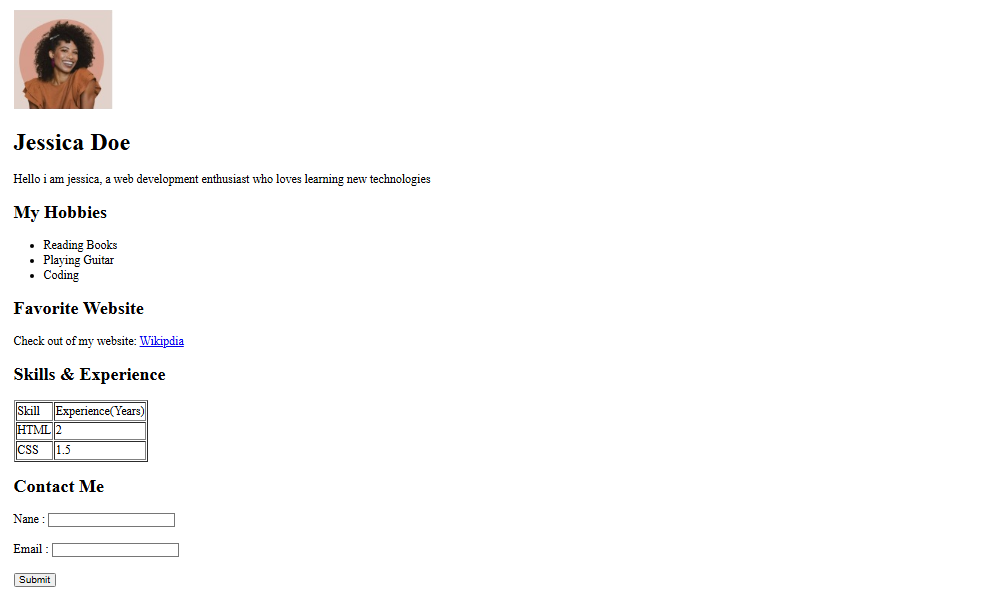HTML Code:
<!DOCTYPE html>
<html lang="en">
<head>
<meta charset="UTF-8" />
<meta name="viewport" content="width=device-width, initial-scale=1.0" />
<title>Task 1</title>
</head>
<body style="padding: 10px">
<div>
<img src="Images/Capture.PNG" alt="portfolio" />
<h1>Jessica Doe</h1>
<p>
Hello i am jessica, a web development enthusiast who loves learning new
technologies
</p>
</div>
<div>
<h2>My Hobbies</h2>
<ul>
<li>Reading Books</li>
<li>Playing Guitar</li>
<li>Coding</li>
</ul>
</div>
<div>
<h2>Favorite Website</h2>
<p>Check out of my website: <a href="https://www.wikipedia.org/" title="Wikipdia Website">Wikipdia</a></p>
</div>
<div>
<h2>Skills & Experience</h2>
<table border="1">
<thead>
<tr>
<td>Skill</td>
<td>Experience(Years)</td>
</tr>
</thead>
<tbody>
<tr>
<td>HTML</td>
<td>2</td>
</tr>
<tr>
<td>CSS</td>
<td>1.5</td>
</tr>
</tbody>
</table>
</div>
<div>
<h2>Contact Me</h2>
<form>
<label>Nane :</label>
<input type="text"/>
<br><br>
<label>Email :</label>
<input type="text"/>
<br><br>
<input type="submit"/>
</form>
</div>
</body>
</html>
Note:
1️⃣ قسم المقدمة — يتضمن صورة
<img>
واسم الشخص ونبذة قصيرة عنه.
2️⃣ قسم الهوايات — باستخدام
<ul>
لعرض قائمة هوايات.
3️⃣ قسم الموقع المفضل — رابط Wikipedia مع وسم
<a>.
4️⃣ قسم المهارات والخبرة — جدول
<table>
يحتوي على أسماء المهارات وعدد سنوات الخبرة.
5️⃣ قسم التواصل — نموذج
<form>
لإدخال الاسم والبريد الإلكتروني وزر إرسال.
النتيجة: صفحة تعريفية منظمة تحتوي على معلومات شخصية، هوايات، مهارات، ورابط موقع مفضل.
Task 2
Output:
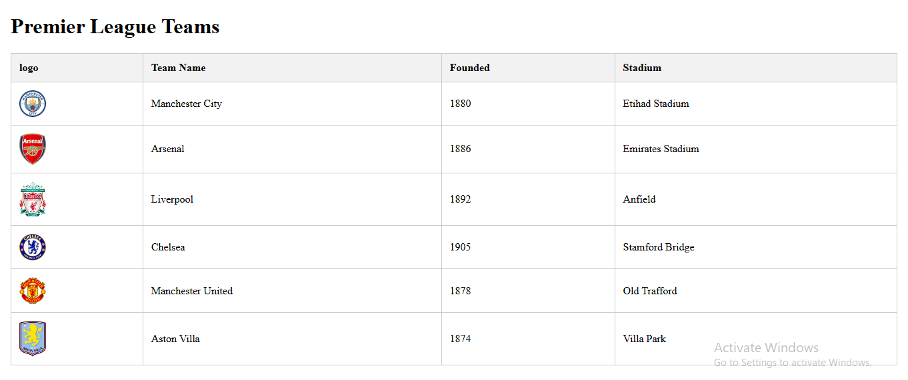HTML Code:
<!DOCTYPE html>
<html lang="en">
<head>
<meta charset="UTF-8" />
<meta name="viewport" content="width=device-width, initial-scale=1.0" />
<title>Task 2</title>
<style>
table {
width: 100%;
border-collapse: collapse;
}
th,
td {
text-align: left;
padding: 12px;
border: 1px solid #ccc;
}
th {
background-color: #f2f2f2;
}
img {
display: block;
max-width: 40px;
height: auto;
}
</style>
</head>
<body style="padding: 10px">
<h1>Premier League Teams</h1>
<table>
<thead>
<th>logo</th>
<th>Team Name</th>
<th>Founded</th>
<th>Stadium</th>
</thead>
<tbody>
<tr>
<td>
<img
src="./Images/Manchester_City_FC_badge.svg.png"
alt="Manchester City"
/>
</td>
<td>Manchester City</td>
<td>1880</td>
<td>Etihad Stadium</td>
</tr>
<tr>
<td><img src="./Images/Arsenal_FC.svg" alt="Arsenal" /></td>
<td>Arsenal</td>
<td>1886</td>
<td>Emirates Stadium</td>
</tr>
<tr>
<td><img src="./Images/Liverpool_FC.svg" alt="Liverpool" /></td>
<td>Liverpool</td>
<td>1892</td>
<td>Anfield</td>
</tr>
<tr>
<td><img src="./Images/Chelsea_FC.svg" alt="Chelsea" /></td>
<td>Chelsea</td>
<td>1905</td>
<td>Stamford Bridge</td>
</tr>
<tr>
<td>
<img
src="./Images/Manchester_United_FC_crest.svg"
alt="Manchester United"
/>
</td>
<td>Manchester United</td>
<td>1878</td>
<td>Old Trafford</td>
</tr>
<tr>
<td>
<img
src="./Images/Aston_Villa_FC_new_crest.svg.png"
alt="Aston Villa"
/>
</td>
<td>Aston Villa</td>
<td>1874</td>
<td>Villa Park</td>
</tr>
</tbody>
</table>
</body>
</html>
Note:
1️⃣ العنوان الرئيسي — باستخدام الوسم
<h1> لعرض اسم الجدول: Premier League Teams.
2️⃣ الجدول — مُنشأ باستخدام
<table> ويحتوي على الأعمدة:
الشعار، اسم الفريق، سنة التأسيس، واسم الملعب.
3️⃣ تنسيق الجدول — تم تطبيق CSS لتحديد عرض الجدول، تباعد الخلايا، حدود الأعمدة، ولون خلفية الصفوف العلوية.
4️⃣ الصور — إضافة شعارات الفرق باستخدام
<img> مع خاصية max-width لضبط حجمها.
النتيجة: عرض منظم وجذاب لمعلومات الفرق مع شعاراتها في جدول متجاوب.
CSS Tasks
Task 1
Output:
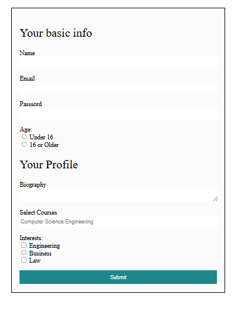HTML Code:(index file)
<!DOCTYPE html>
<html lang="en">
<head>
<meta charset="UTF-8">
<meta name="viewport" content="width=device-width, initial-scale=1.0">
<title>Day 2 -Task</title>
<link rel="stylesheet" href="main.css" />
</head>
<body>
<div>
<h2>Your basic info</h2>
<form>
<label for="name">Name</label>
<br>
<input type="text" name="name"/>
<br><br>
<label for="email">Email</label>
<br>
<input type="email" name="emai"/>
<br><br>
<label for="password">Passsord</label>
<br>
<input type="password" name="password"/>
<br><br>
<label for="Age">Age:</label>
<br>
<input type="radio" name="age" id="Under 16" value="Under 16" placeholder="Under 16" />
<label for="Under 16">Under 16</label>
<br>
<input type="radio" name="age" id="16 or Older" value="16 or Older" />
<label for="16 or Older">16 or Older</label>
<br>
<h2>Your Profile</h2>
<label for="textarea">Biography</label>
<br>
<textarea id="textarea" rows="2" cols="50" ></textarea>
<br><br>
<label for="courses">Select Courses</label>
<br>
<input type="number" name="courses" placeholder="Computer Science Engineering"/>
<br><br>
<label for="Interests">Interests:</label>
<br>
<input type="checkbox" name="Interests" id="engineering" value="Engineering" />
<label for="engineering">Engineering</label>
<br>
<input type="checkbox" name="Interests" id="business" value="Business" />
<label for="business">Business</label>
<br>
<input type="checkbox" name="Interests" id="law" value="Law" />
<label for="law">Law</label>
<br><br>
<input type="submit"/>
</form>
</div>
</body>
</html>
CSS Code:(Main.css file)
body {
padding: 40px;
}
h2 {
font-weight: 400;
font-size: 30px;
/* text-align: center; */
}
div {
padding: 20px;
border: 1px solid black;
width: 500px;
margin: 0 auto;
position: relative;
background-color: hsl(0deg 0% 98.25%);
}
form {
width: 100%;
height: 100%;
}
input[type="text"],
input[type="email"],
input[type="password"],
input[type="number"],
textarea {
height: 30px;
width: 100%;
}
input,textarea {
border: none;
}
input[type="submit"] {
display: block;
width: 100%;
padding: 10px;
height: 50;
color: white;
background-color: rgb(27 136 139);
}
Note:
1️⃣ تصميم النموذج — باستخدام CSS لتنسيق الحقول، الأزرار، وإضافة ألوان وخلفيات منظمة.
2️⃣ تنوع الحقول — يشمل نصوص، أرقام، كلمات مرور، أزرار اختيار
radio، مربعات تحديد checkbox، ومساحة نصية textarea.
النتيجة: نموذج تفاعلي وبسيط لجمع بيانات المستخدم بطريقة مرتبة.
Task 2
Output:
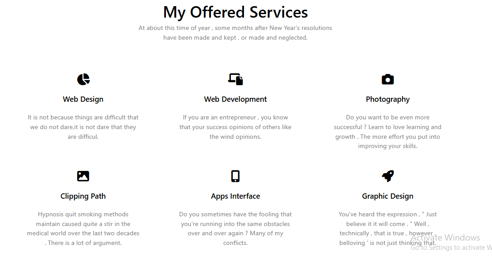HTML Code:(index file)
<!DOCTYPE html>
<html lang="en">
<head>
<meta charset="UTF-8">
<meta name="viewport" content="width=device-width, initial-scale=1.0">
<title>CSS - Task 2</title>
<link rel="stylesheet" href="Main.css"/>
<link rel="stylesheet" href="all.min.css">
</head>
<body>
<div class="Section">
<div class="head">
<h1>My Offered Services</h1>
<p>At about this time of year , some months after New Year's resolutions have been made and kept , or made and neglected.</p>
</div>
<div class="Container">
<div class="card">
<i class="fa-solid fa-chart-pie"></i>
<h3>Web Design</h2>
<p>It is not because things are difficult that we do not dare,it is not dare that they are difficul.</p>
</div>
<div class="card">
<i class="fa-solid fa-laptop-file"></i>
<h3>Web Development</h2>
<p>If you are an entrepreneur , you know that your success opinions of others like the wind opinions.</p>
</div>
<div class="card">
<i class="fa-solid fa-camera"></i>
<h3>Photography</h2>
<p>Do you want to be even more successful ? Learn to love learning and growth . The more effort you put into improving your skills.</p>
</div>
<div class="card">
<i class="fa-solid fa-image"></i>
<h3>Clipping Path</h2>
<p>Hypnosis quit smoking methods maintain caused quite a stir in the medical world over the last two decades . There is a lot of argument.</p>
</div>
<div class="card">
<i class="fa-solid fa-mobile-screen-button"></i>
<h3>Apps Interface</h2>
<p>Do you sometimes have the fooling that you're running into the same obstacles over and over again ? Many of my conflicts.</p>
</div>
<div class="card">
<i class="fa-solid fa-rocket"></i>
<h3>Graphic Design</h2>
<p>You've heard the expression , " Just believe it it will come . " Well , technically , that is true , however , belloving ' is not just thinking that.</p>
</div>
</div>
</div>
</body>
</html>
CSS Code:(Main.css file)
* {
padding: 0;
margin: 0;
box-sizing: border-box;
}
.Section {
width: 70%;
margin: auto;
}
.Section .head {
text-align: center;
width: 49%;
margin: auto;
margin-bottom: 80px;
}
.Section .head h1 {
font-weight: 500;
font-size: 40px;
margin-top: 100px;
}
.Section .head p {
font-size: 16px;
color:grey;
}
.Container {
display: flex;
flex-wrap: wrap;
justify-content: space-between;
}
.card {
width:27%;
margin-bottom: 50px;
text-align: center;
}
.card p {
font-size: 16px;
color:grey;
}
.card i {
font-size: 30px;
margin-bottom: 20px;
}
.card h3 {
font-weight: 500;
margin-bottom: 20px;
}
Note:
HTML منظم مع أيقونات Font Awesome
لكل خدمة.
1️⃣ عنوان القسم — عنوان رئيسي
<h1> وفقرة وصفية تمهيدية.
2️⃣ بطاقات الخدمات — كل بطاقة تحتوي أيقونة
<i>،
عنوان <h3>، ووصف <p> قصير.
النتيجة: عرض أنيق ومتناسق لست خدمات مع أيقونات توضيحية ونصوص تعريفية.
HTML5 - CSS3 Tasks
Lab 1
Task 1
Desired Output:
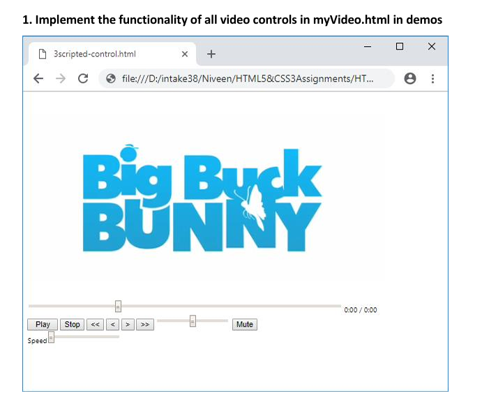Output on my web page:

HTML Code:(index file)
<!DOCTYPE html>
<html lang="en">
<head>
<meta charset="UTF-8" />
<meta name="viewport" content="width=device-width, initial-scale=1.0" />
<title>HTML5/CSS3 - Lab1</title>
<style>
body {
font-family: Arial, sans-serif;
background: #1e1e1e;
color: #fff;
display: flex;
justify-content: center;
align-items: center;
height: 100vh;
flex-direction: column;
}
video {
width: 720px;
max-width: 90%;
border: 1px solid #444;
}
.controls {
margin-top: 10px;
display: flex;
flex-wrap: wrap;
gap: 10px;
justify-content: center;
align-items: center;
}
input[type="range"] {
width: 100px;
}
.speed-label {
min-width: 60px;
text-align: center;
font-weight: bold;
}
label {
display: block;
margin: 10px 0 5px;
}
input[type="range"] {
width: 300px;
}
#colorText {
margin-top: 30px;
font-size: 24px;
font-weight: bold;
}
</style>
</head>
<body>
<!-- Using On Task 1 -->
<h2>My Custom Video Player</h2>
<video id="myVideo">
<source src="frozen.mp4" type="video/mp4" />
المتصفح لا يدعم تشغيل الفيديو.
</video>
<div class="controls">
<button onclick="playVideo()">▶️ تشغيل</button>
<button onclick="pauseVideo()">⏸️ إيقاف مؤقت</button>
<button onclick="stopVideo()">⏹️ إيقاف</button>
<button onclick="rewindVideo()">⏪ Rewind 10s</button>
<button onclick="forwardVideo()">⏩ Forward 10s</button>
<button onclick="muteVideo()">🔇 Mute</button>
Volume 🔊
<input
type="range"
id="volumeControl"
min="0"
max="1"
step="0.1"
onchange="changeVolume(this.value)"
/>
Video Progress⏱️
<input
type="range"
id="seekBar"
min="0"
max="100"
value="0"
onchange="seekVideo(this.value)"
/>
<label for="speedRange"> Speed:</label>
<input
type="range"
id="speedRange"
min="0.25"
max="3"
step="0.25"
value="1"
oninput="changeSpeed(this.value)"
/>
<span class="speed-label" id="speedDisplay">1.0x</span>
</div>
<script src="main.js"></script>
</body>
</html>
JavaScript Code:(Main.js file)
// Task 1 Code
const video = document.getElementById("myVideo");
const seekBar = document.getElementById("seekBar");
const speedDisplay = document.getElementById("speedDisplay");
function playVideo() {
video.play();
}
function pauseVideo() {
video.pause();
}
function stopVideo() {
video.pause();
video.currentTime = 0;
}
function changeVolume(val) {
video.volume = val;
}
function seekVideo(val) {
video.currentTime = (val / 100) * video.duration;
}
video.addEventListener("timeupdate", () => {
if (video.duration) {
seekBar.value = (video.currentTime / video.duration) * 100;
}
});
function changeSpeed(val) {
video.playbackRate = parseFloat(val);
speedDisplay.textContent = val + "x";
}
function rewindVideo() {
video.currentTime -= 10;
}
function forwardVideo() {
video.currentTime += 10;
}
function muteVideo() {
video.muted = !video.muted;
}
Note:
HTML و JavaScript مع
أزرار تحكم وعناصر
input range للتحكم في الصوت والسرعة والتقديم/الترجيع.
1️⃣ الهيكل — وسم
<video> مع ملف فيديو، وأزرار للتحكم (تشغيل، إيقاف مؤقت، إيقاف كامل، تقديم وترجيع 10 ثواني، كتم الصوت).
2️⃣ الوظائف البرمجية — دوال
JS للتحكم في خصائص الفيديو مثل
play()، pause()، currentTime، volume، وplaybackRate، مع تحديث شريط التقدم باستخدام حدث timeupdate.
النتيجة: إنشاء مشغل فيديو تفاعلي بالكامل بواجهة تحكم مصممة خصيصًا للمستخدم.
Task 2
Desired Output:
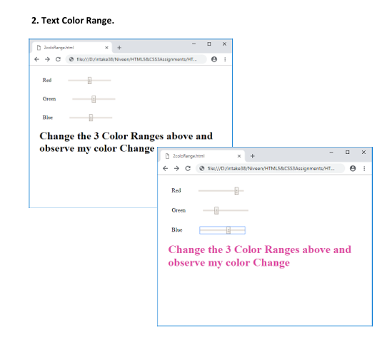Output on my web page:
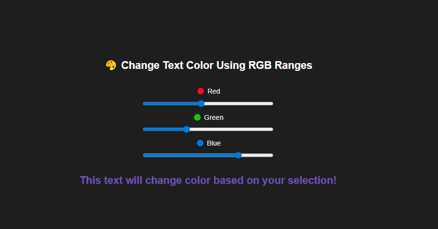HTML Code:(index file)
<!DOCTYPE html>
<html lang="en">
<head>
<meta charset="UTF-8" />
<meta name="viewport" content="width=device-width, initial-scale=1.0" />
<title>HTML5/CSS3 - Lab1</title>
<style>
body {
font-family: Arial, sans-serif;
background: #1e1e1e;
color: #fff;
display: flex;
justify-content: center;
align-items: center;
height: 100vh;
flex-direction: column;
}
video {
width: 720px;
max-width: 90%;
border: 1px solid #444;
}
.controls {
margin-top: 10px;
display: flex;
flex-wrap: wrap;
gap: 10px;
justify-content: center;
align-items: center;
}
input[type="range"] {
width: 100px;
}
.speed-label {
min-width: 60px;
text-align: center;
font-weight: bold;
}
label {
display: block;
margin: 10px 0 5px;
}
input[type="range"] {
width: 300px;
}
#colorText {
margin-top: 30px;
font-size: 24px;
font-weight: bold;
}
</style>
</head>
<body>
<h2>🎨 Change Text Color Using RGB Ranges</h2>
<label for="redRange">🔴 Red</label>
<input type="range" id="redRange" min="0" max="255" value="0" />
<label for="greenRange">🟢 Green</label>
<input type="range" id="greenRange" min="0" max="255" value="0" />
<label for="blueRange">🔵 Blue</label>
<input type="range" id="blueRange" min="0" max="255" value="0" />
<p id="colorText">This text will change color based on your selection!</p>
<script src="main.js"></script>
</body>
</html>
JavaScript Code:(Main.js file)
// Task 2 Code
const red = document.getElementById("redRange");
const green = document.getElementById("greenRange");
const blue = document.getElementById("blueRange");
const text = document.getElementById("colorText");
function updateColor() {
const r = red.value;
const g = green.value;
const b = blue.value;
const rgb = `rgb(${r}, ${g}, ${b})`;
text.style.color = rgb;
}
red.addEventListener("input", updateColor);
green.addEventListener("input", updateColor);
blue.addEventListener("input", updateColor);
Note:
RGB وتغيير لون النص مباشرة.
1️⃣ تحديد العناصر — جلب عناصر التحكم الأحمر والأخضر والأزرق باستخدام
getElementById، وكذلك عنصر النص.
2️⃣ التغيير الفوري — عند تحريك أي شريط، يتم استدعاء دالة
updateColor() لتكوين قيمة rgb(r,g,b)
وتطبيقها على خاصية style.color للنص.
النتيجة: تغيير لون النص بشكل ديناميكي وفوري بناءً على اختيارات المستخدم لدرجات الأحمر والأخضر والأزرق.
Lab 2
Task 1
Desired Output:
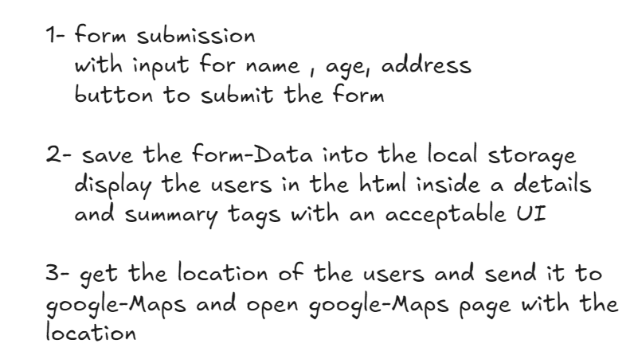Output on my web page:
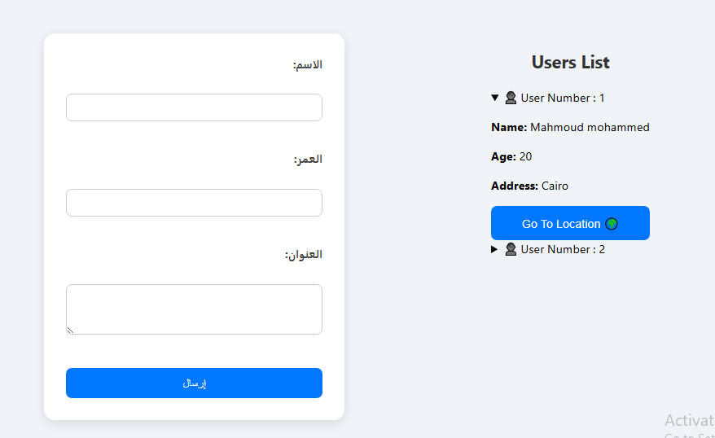HTML Code:(index file)
<!DOCTYPE html>
<html lang="en">
<head>
<meta charset="UTF-8" />
<meta name="viewport" content="width=device-width, initial-scale=1.0" />
<title>HTML5-CSS3 / Day 2 Lab</title>
<style>
body {
font-family: "Segoe UI", Tahoma, Geneva, Verdana, sans-serif;
background-color: #f0f4f8;
display: flex;
justify-content: center;
align-items: center;
height: 100vh;
margin: 0;
}
form {
background-color: #fff;
padding: 30px;
border-radius: 15px;
box-shadow: 0 4px 15px rgba(0, 0, 0, 0.1);
width: 350px;
text-align: right;
direction: rtl;
}
h2 {
margin-bottom: 20px;
text-align: center;
color: #333;
}
label {
display: block;
margin-bottom: 5px;
font-weight: bold;
color: #444;
}
input,
textarea {
width: 100%;
padding: 10px;
margin-bottom: 15px;
border: 1px solid #ccc;
border-radius: 8px;
box-sizing: border-box;
transition: border-color 0.3s;
}
input:focus,
textarea:focus {
border-color: #0077ff;
outline: none;
}
button {
width: 100%;
padding: 12px;
background-color: #0077ff;
color: white;
border: none;
border-radius: 8px;
font-size: 16px;
cursor: pointer;
transition: background-color 0.3s;
}
button:hover {
background-color: #005fcc;
}
.container {
display: flex;
gap: 200px;
}
</style>
</head>
<body>
<!-- Using oN Task 1 -->
<div class="container">
<form id="form">
<label for="name">الاسم:</label><br />
<input type="text" id="name" name="name" required /><br /><br />
<label for="age">العمر:</label><br />
<input type="number" id="age" name="age" required /><br /><br />
<label for="address">العنوان:</label><br />
<textarea id="address" name="address" rows="3" required></textarea>
<br /><br />
<button type="submit">إرسال</button>
</form>
<div id="text">
<h2>Users List</h2>
<div id="userList">
</div>
</div>
</body>
<script src="index.js"></script>
</body>
</html>
JavaScript Code:(Main.js file)
console.log("Heelo From Js File");
const form = document.getElementById("form");
const Name = document.getElementById("name");
const age = document.getElementById("age");
const address = document.getElementById("address");
const userList = document.getElementById("userList");
form.onsubmit = (e) => {
e.preventDefault();
const user = {
Name: Name.value.trim(),
Age: age.value.trim(),
Address: address.value.trim(),
};
const stored = localStorage.getItem("User");
let UserData = [];
if (stored) {
try {
const parsed = JSON.parse(stored);
if (Array.isArray(parsed)) {
UserData = parsed;
}
} catch (err) {
console.error("Failed To Read Data", err);
}
}
UserData.push(user);
const StringifyedUser = JSON.stringify(UserData);
localStorage.setItem("User", StringifyedUser);
displayUsers();
form.reset();
};
function displayUsers() {
const stored = localStorage.getItem("User");
if (!stored) return;
const users = JSON.parse(stored);
userList.innerHTML = "";
users.forEach((user, index) => {
const details = document.createElement("details");
const summary = document.createElement("summary");
summary.textContent = `👤 User Number : ${index + 1}`;
const info = document.createElement("div");
info.innerHTML = `
Name: ${user.Name}
Age: ${user.Age}
Address: ${user.Address}
`;
details.appendChild(summary);
details.appendChild(info);
userList.appendChild(details);
});
}
displayUsers();
Note:
1️⃣ جمع البيانات — عند إرسال النموذج يتم إيقاف الإرسال الافتراضي بـ
e.preventDefault() وجمع القيم من الحقول بعد
trim() لإزالة الفراغات.
2️⃣ التخزين المحلي — يتم قراءة البيانات المخزنة سابقًا من
localStorage وتحويلها من JSON، ثم إضافة المستخدم الجديد
وتخزين القائمة المحدثة مرة أخرى.
3️⃣ عرض البيانات — دالة
displayUsers()
تقوم بإنشاء عناصر <details> و<summary>
لكل مستخدم مع عرض التفاصيل وزر لفتح موقع العنوان على Google Maps.
النتيجة: نظام بسيط لإدارة بيانات المستخدمين وحفظها في المتصفح حتى بعد إعادة تحميل الصفحة.
Task 2
Desired Output:
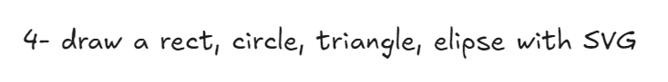Output on my web page:
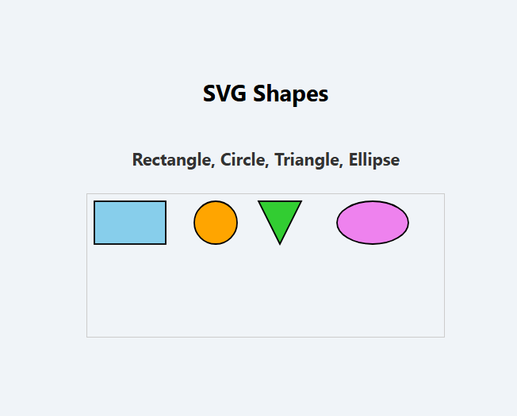HTML Code:(index file)
<!DOCTYPE html>
<html lang="en">
<head>
<meta charset="UTF-8" />
<meta name="viewport" content="width=device-width, initial-scale=1.0" />
<title>HTML5-CSS3 / Day 2 Lab</title>
<style>
.SvgContainer {
display: flex;
flex-direction: column;
gap: 10px;
text-align: center;
}
</style>
</head>
<body>
<div class="SvgContainer">
<h1>SVG Shapes</h1>
<h2>Rectangle, Circle, Triangle, Ellipse</h2>
<svg width="500" height="200" style="border:1px solid #ccc">
<rect x="10" y="10" width="100" height="60" fill="skyblue" stroke="black" stroke-width="2" />
<circle cx="180" cy="40" r="30" fill="orange" stroke="black" stroke-width="2" />
<polygon points="270,70 240,10 300,10" fill="limegreen" stroke="black" stroke-width="2" />
<ellipse cx="400" cy="40" rx="50" ry="30" fill="violet" stroke="black" stroke-width="2" />
</svg>
</div>
</body>
<script src="index.js"></script>
</body>
</html>
Note:
1️⃣ إنشاء الأشكال — باستخدام عناصر
<rect>، <circle>،
<polygon>، <ellipse>
مع تحديد إحداثيات، أبعاد، وألوان عبر خصائص مثل
fill و
stroke.
2️⃣ التنسيق — الحاوية
.SvgContainer
مرتبة عمودياً مع تباعد بين العناصر ومحاذاة للوسط.
النتيجة: عرض رسومات مت矢ية قابلة للتخصيص بسهولة بالألوان والمقاسات.
Lab 3
Task 1
Desired Output:
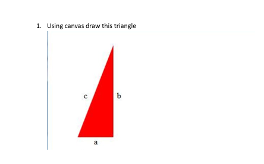Output on my web page:
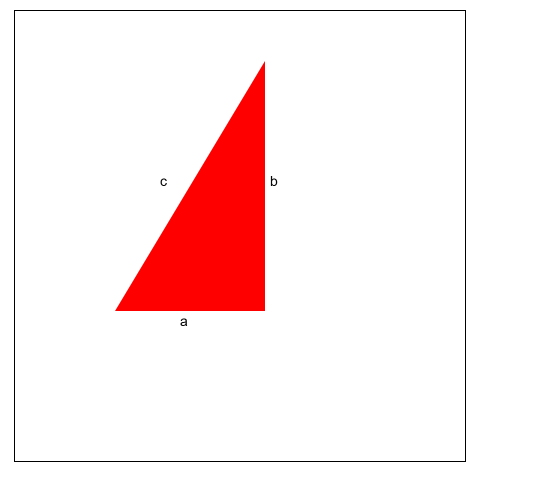HTML Code:(index file)
<!DOCTYPE html>
<html lang="en">
<head>
<meta charset="UTF-8" />
<meta name="viewport" content="width=device-width, initial-scale=1.0" />
<title>HTML5 - CSS3 Day3 Lab</title>
<style>
#myCanvas {
border: 1px solid #000;
margin: 30px;
display: block;
}
</style>
</head>
<body>
<canvas id="myCanvas" width="900" height="900"></canvas>
<script src="main.js"></script>
</body>
</html>
JavaScript Code:(Main.js file)
// Task 1
// Next Block Of Code is const on 3 tasks
const canvas = document.getElementById("myCanvas");
const ctx = canvas.getContext("2d");
// // نرسم المثلث بناءً على الأبعاد الحقيقية
ctx.beginPath();
ctx.moveTo(200, 600); // النقطة A (أسفل اليسار)
ctx.lineTo(500, 100); // النقطة الرأسية العلوية
ctx.lineTo(500, 600); // النقطة B (أسفل اليمين)
ctx.closePath();
// // اللون الأحمر
ctx.fillStyle = "red";
ctx.fill();
// // أسماء الأضلاع
ctx.fillStyle = "black";
ctx.font = "28px Arial";
ctx.fillText("a", 330, 630); // الضلع السفلي
ctx.fillText("b", 510, 350); // الضلع العمودي
ctx.fillText("c", 290, 350); // الضلع المائل
Note:
1️⃣ تهيئة اللوحة — الحصول على عنصر
canvas عبر getElementById
ثم إنشاء سياق الرسم ثنائي الأبعاد getContext("2d").
2️⃣ رسم المثلث — تحديد النقاط باستخدام
moveTo و lineTo، ثم غلق المسار بـ
closePath وتعبئته باللون
red.
3️⃣ إضافة النصوص — ضبط اللون والخط ثم استخدام
fillText لكتابة أسماء الأضلاع في مواقعها المناسبة.
النتيجة: شكل مثلث ملون مع تسميات توضيحية للأضلاع.
Task 2
Desired Output:
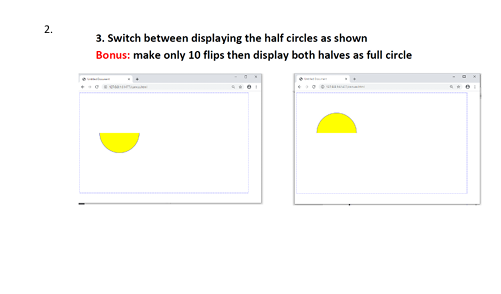Output on my web page:
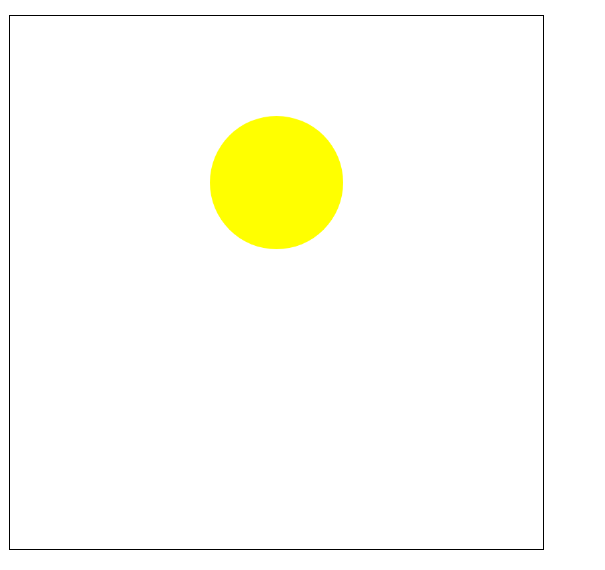HTML Code:(index file)
<!DOCTYPE html>
<html lang="en">
<head>
<meta charset="UTF-8" />
<meta name="viewport" content="width=device-width, initial-scale=1.0" />
<title>HTML5 - CSS3 Day3 Lab</title>
<style>
#myCanvas {
border: 1px solid #000;
margin: 30px;
display: block;
}
</style>
</head>
<body>
<canvas id="myCanvas" width="600" height="600"></canvas>
<script src="main.js"></script>
</body>
</html>
JavaScript Code:(Main.js file)
// Task 2
const canvas = document.getElementById("myCanvas");
const ctx = canvas.getContext("2d");
let isTop = true;
let flipCount = 0;
function drawHalfCircle() {
ctx.clearRect(0, 0, canvas.width, canvas.height);
ctx.beginPath();
ctx.fillStyle = "yellow";
if (flipCount >= 10) {
ctx.arc(400, 250, 100, 0, Math.PI * 2);
} else {
if (isTop) {
ctx.arc(400, 250, 100, Math.PI, 0, false);
} else {
ctx.arc(400, 250, 100, 0, Math.PI, false);
}
isTop = !isTop;
flipCount++;
}
ctx.fill();
}
setInterval(drawHalfCircle, 500);
Note:
1️⃣ التهيئة — الحصول على عنصر
canvas وإنشاء سياق الرسم ثنائي الأبعاد
getContext("2d").
2️⃣ رسم نصف الدائرة — استخدام
arc() مع تغيير الزاوية حسب قيمة
isTop، ثم قلبها كل مرة باستخدام
!isTop.
3️⃣ التحريك — استدعاء الدالة كل نصف ثانية بـ
setInterval()، ومع كل مرة يزداد
flipCount حتى يصل إلى
10 فيرسم دائرة كاملة.
النتيجة: حركة نصف دائرة تتقلب لأعلى وأسفل ثم تتحول لدائرة.
Task 3
Desired Output:
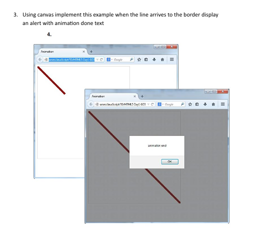Output on my web page:
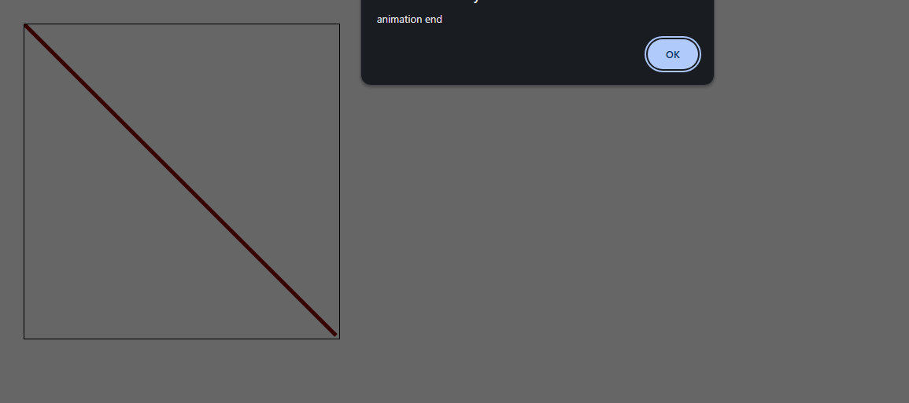HTML Code:(index file)
<!DOCTYPE html>
<html lang="en">
<head>
<meta charset="UTF-8" />
<meta name="viewport" content="width=device-width, initial-scale=1.0" />
<title>HTML5 - CSS3 Day3 Lab</title>
<style>
#myCanvas {
border: 1px solid #000;
margin: 30px;
display: block;
}
</style>
</head>
<body>
<canvas id="myCanvas" width="600" height="600"></canvas>
<script src="main.js"></script>
</body>
</html>
JavaScript Code:(Main.js file)
// Task 3
const canvas = document.getElementById("myCanvas");
const ctx = canvas.getContext("2d");
let x1 = 0,
y1 = 0;
let x2 = 0,
y2 = 0;
function draw() {
ctx.clearRect(0, 0, canvas.width, canvas.height);
ctx.beginPath();
ctx.moveTo(x1, y1);
ctx.lineTo(x2, y2);
ctx.strokeStyle = "darkred";
ctx.lineWidth = 5;
ctx.stroke();
// تحديث نهاية الخط ليتجه نحو الزاوية السفلية اليمنى
x2 += 2;
y2 += 2;
// شرط التوقف عند الوصول للحافة
if (x2 >= canvas.width || y2 >= canvas.height) {
alert("animation end");
return;
}
requestAnimationFrame(draw);
}
draw();
Note:
canvas يبدأ من
النقطة (0,0)
ويتحرك تدريجيًا نحو الزاوية السفلية اليمنى.
1️⃣ الإعداد — الحصول على
canvas وسياق الرسم ثنائي الأبعاد
getContext("2d").
2️⃣ الرسم والتحريك — استخدام
moveTo() وlineTo()
لتحديد نقاط الخط، وتغيير إحداثيات النهاية
x2 وy2 بمقدار
+2 في كل تحديث.
3️⃣ التكرار — استدعاء
draw() داخل
requestAnimationFrame()
للحصول على حركة سلسة، مع التوقف عند الوصول للحافة
وعرض تنبيه alert().
النتيجة: خط ينمو من الأعلى اليسار إلى الأسفل اليمين حتى اكتمال المسار.
Fundemental Js Tasks
Lab 1
Output:
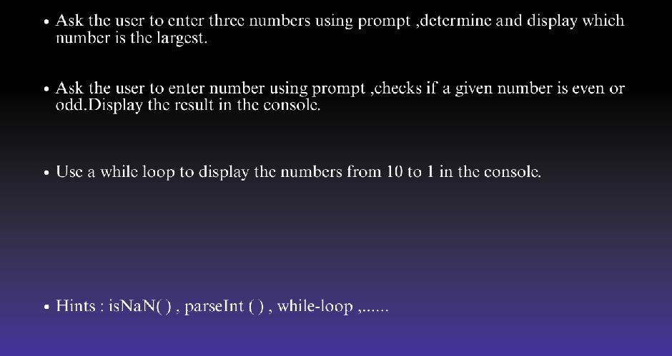 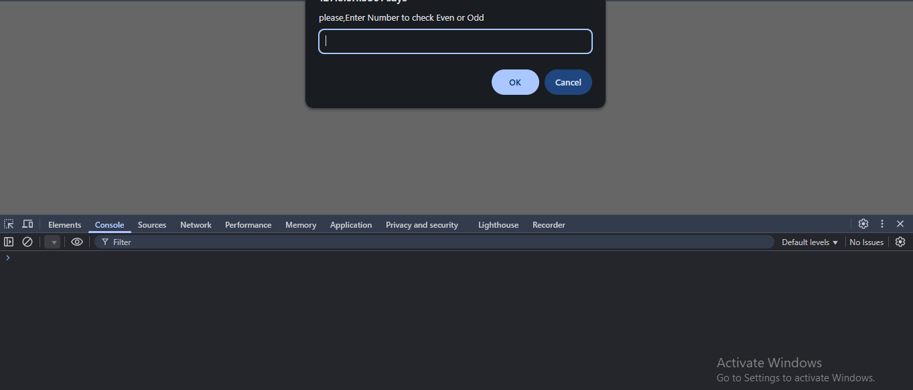 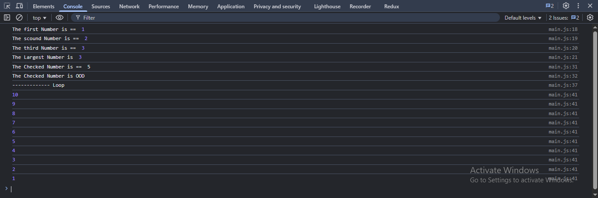Code:
// Lab 1
let firstNumber = parseInt(prompt("please,Enter the First Number"));
let scoundNumber = parseInt(prompt("please,Enter the Scound Number"));
let thirdNumber = parseInt(prompt("please,Enter the Third Number"));
if (isNaN(firstNumber) || isNaN(scoundNumber) || isNaN(thirdNumber)) {
alert("Please enter valid numbers.");
} else if (firstNumber > scoundNumber && firstNumber >> thirdNumber) {
console.log("The first Number is == ", firstNumber);
console.log("The scound Number is == ", scoundNumber);
console.log("The third Number is == ", thirdNumber);
console.log("The Largest Number is ", firstNumber);
} else if (scoundNumber > firstNumber && scoundNumber > thirdNumber) {
console.log("The first Number is == ", firstNumber);
console.log("The scound Number is == ", scoundNumber);
console.log("The third Number is == ", thirdNumber);
console.log("The Largest Number is ", scoundNumber);
} else {
console.log("The first Number is == ", firstNumber);
console.log("The scound Number is == ", scoundNumber);
console.log("The third Number is == ", thirdNumber);
console.log("The Largest Number is ", thirdNumber);
}
///////////////////////////////////////////////////////
let CheckedNumber = prompt("please,Enter Number to check Even or Odd");
if (CheckedNumber % 2 == 0) {
console.log("The Checked Number is == ", CheckedNumber);
console.log("The Checked Number is EVEN ");
} else {
console.log("The Checked Number is == ", CheckedNumber);
console.log("The Checked Number is OOD ");
}
///////////////////////////////////////////////////////
console.log("------------- Loop ");
let i = 10;
while (i >= 1) {
console.log(i);
i--;
}
Note:
1️⃣ إيجاد أكبر رقم من بين 3 أرقام يدخلهم المستخدم، مع التحقق إنهم أرقام صحيحة باستخدام isNaN قبل المقارنة.
2️⃣ تحديد إذا كان الرقم زوجي أو فردي عن طريق باقي القسمة %.
3️⃣ حلقة تكرار (Loop) باستخدام while لعرض الأرقام من 10 إلى 1 تنازلياً.
النتيجة: مثال تدريبي بسيط يجمع بين إدخال البيانات من المستخدم، التحقق من القيم، المقارنات، والحلقات.
Lab 2
Output:
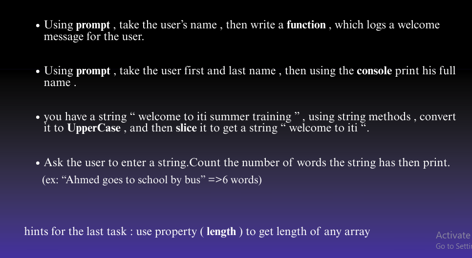 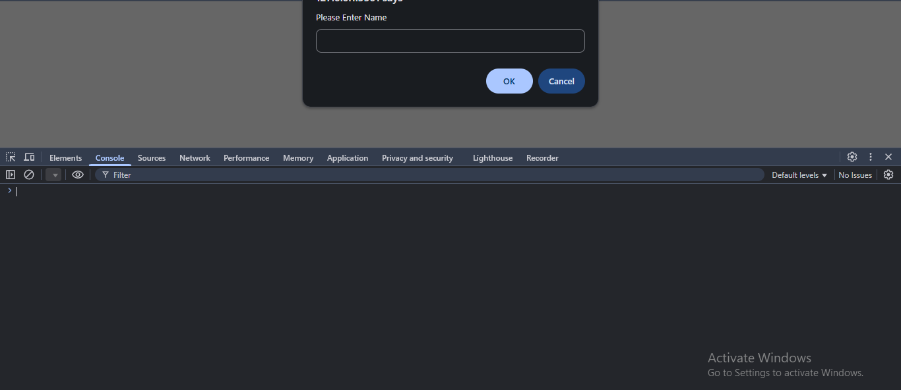 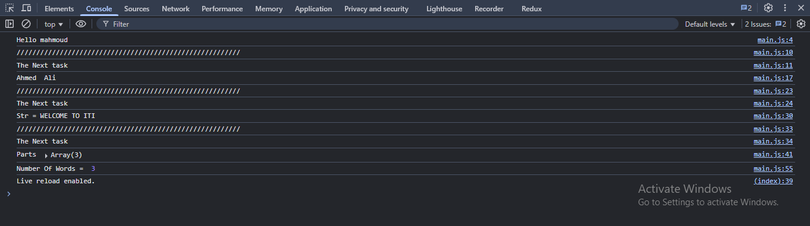Code:
// Lab 2
let name = prompt("Please Enter Name");
function SayHello() {
console.log("Hello", name);
}
SayHello();
////////////////////////////////////
console.log("/////////////////////////////////////////////////////////");
console.log("The Next task");
let FirtName = prompt("Please Enter First Name");
let LastName = prompt("Please Enter Last Name");
function PrintFullName() {
console.log(FirtName, "", LastName);
}
PrintFullName();
////////////////////////////////////
console.log("/////////////////////////////////////////////////////////");
console.log("The Next task");
let Str = "Welcome to iti summer traininig";
let UpperCaceStr = Str.toUpperCase();
let NeweStr = UpperCaceStr.slice(0, 15);
console.log("Str =", NeweStr);
////////////////////////////////////
console.log("/////////////////////////////////////////////////////////");
console.log("The Next task");
let Str2 = prompt("Please Enter String of Words");
// let Str2 = "Welcome to iti summer traininig";
function CountWords(Str) {
Parts = Str.trim().split(" ");
console.log("Parts", Parts);
let count = 0;
for (i = 0; i < Parts.length; i++) {
// if You Use parts.length on loop ==> it is count Number of words on the String
// But if You Use Str.length on loop ==> it is count Number of Chars on the String
if (Parts[i] !== " ") {
count++;
}
}
return count;
}
console.log("Number Of Words = ", CountWords(Str2));
Note:
1️⃣ تحية المستخدم بياخد الاسم من prompt ويطبع رسالة "Hello".
2️⃣ طباعة الاسم الكامل بيطلب الاسم الأول والأخير ويطبعهم مع بعض.
3️⃣ التعامل مع النصوص بيحول جملة إلى حروف كبيرة (toUpperCase) وبعدين ياخد أول 15 حرف منها باستخدام (slice).
4️⃣ عد الكلمات في نص بيطلب نص من المستخدم، يشيله المسافات الزائدة (trim)، يقسمه لكلمات (split)، وبعدين يعد الكلمات الفعلية.
النتيجة: البرنامج بيستعرض أساسيات التعامل مع النصوص، الدوال، والمدخلات من المستخدم.
Lab 3
Output:
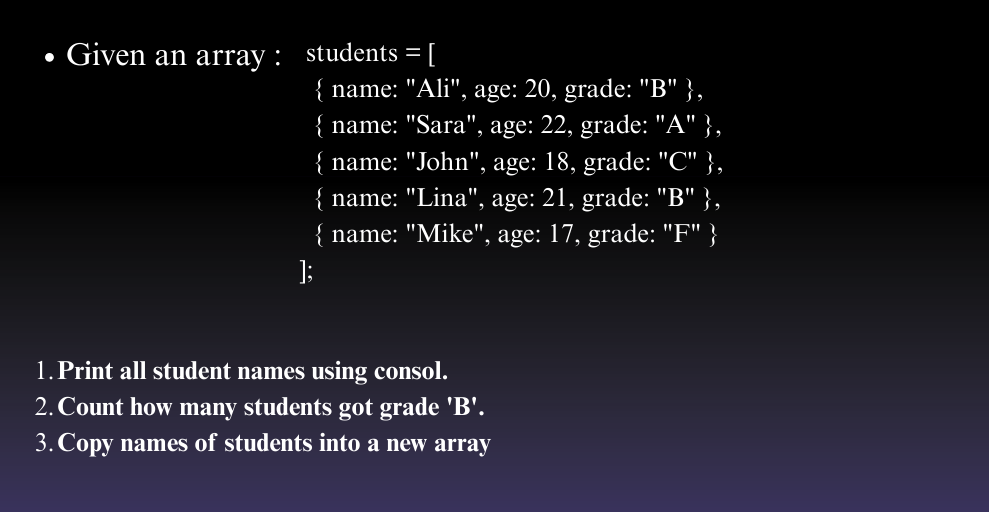 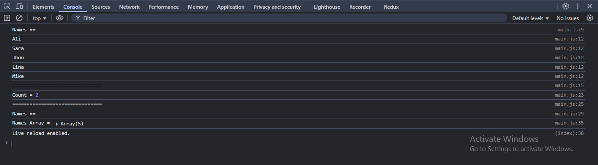Code:
// Lab 3
let arr = [
{ name: "Ali", age: 20, grade: "B" },
{ name: "Sara", age: 22, grade: "A" },
{ name: "Jhon", age: 18, grade: "C" },
{ name: "Lina", age: 21, grade: "B" },
{ name: "Mike", age: 17, grade: "F" },
];
console.log("Names ==");
for (i = 0; i < arr.length; i++) {
console.log(arr[i].name);
}
console.log("===============================");
/////////////////////////////////////////////////////////////////////////
let count = 0;
for (i = 0; i < arr.length; i++) {
if (arr[i].grade == "B") count++;
}
console.log("Count =", count);
console.log("===============================");
/////////////////////////////////////////////////////////////////////////
console.log("Names ==");
let Names = [];
for (i = 0; i < arr.length; i++) {
Names.push(arr[i].name);
}
console.log("Names Array =", Names);
Note:
1️⃣ طباعة أسماء الطلاب بيستخدم حلقة for علشان يطبع قيمة الخاصية (name) لكل عنصر في المصفوفة.
2️⃣ حساب عدد الطلاب الحاصلين على التقدير "B" بيمر على المصفوفة ويزود عداد (count) كل ما يلاقي التقدير مساوي "B".
3️⃣ إنشاء مصفوفة جديدة بالأسماء فقط بيعمل مصفوفة فاضية (Names) ويضيف فيها كل الأسماء باستخدام push.
النتيجة: الكود بيستعرض أساسيات التكرار على المصفوفات، والوصول لخصائص الكائنات، وإنشاء وتجميع بيانات جديدة.
Lab 4
Output:
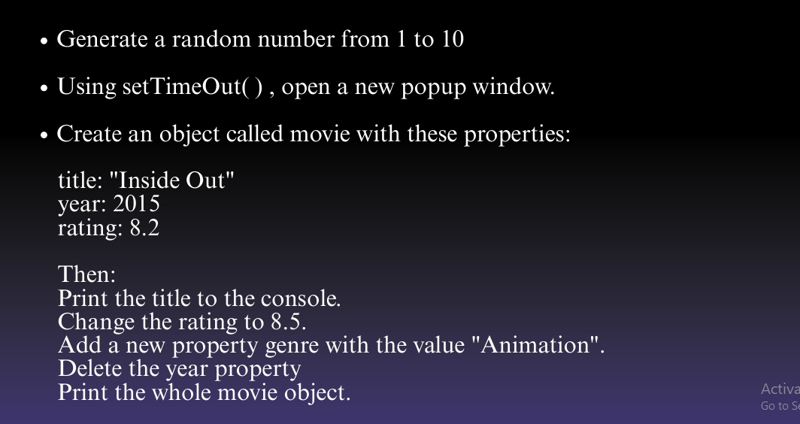 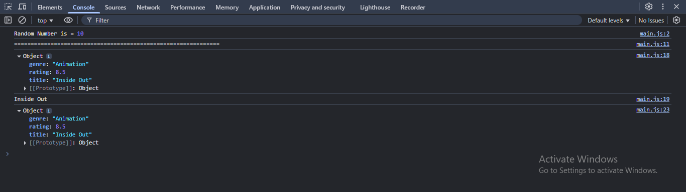 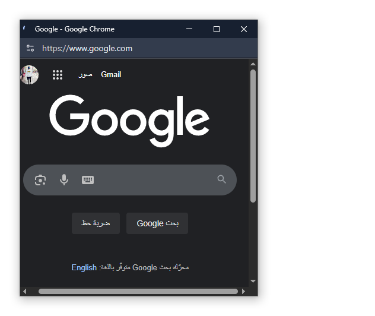Code:
// Lab 4
var RandomNumber = Math.floor(Math.random() * 10) + 1
console.log("Random Number is =", RandomNumber);
///////////////////////////////////////////////////////////////
setTimeout(() => {
open("https://www.google.com/", "_blank", "width=400,height=400");
}, 2000);
///////////////////////////////////////////////////////////////
console.log("==============================================================");
let movie = {
title: "Inside Out",
year: 2015,
rating: 8.2,
};
console.log(movie);
console.log(movie.title);
movie.rating = 8.5;
movie.genre = "Animation";
delete movie.year;
console.log(movie);
Note:
1️⃣ توليد رقم عشوائي بيستخدم Math.random() لتوليد رقم عشـوائي من 1 لحد 10 وبعدين بيحوله لعدد صحيح باستخدام Math.floor().
2️⃣ فتح نافذة بعد تأخير بيستخدم setTimeout علشان يفتح موقع Google في نافذة جديدة بعد 2 ثانية.
3️⃣ التعامل مع الكائنات (Objects) - إنشاء كائن movie بخصائص: title، year، rating.
- طباعة الكائن وخصائصه.
- تعديل خاصية rating.
- إضافة خاصية جديدة genre.
- حذف خاصية year باستخدام delete.
النتيجة: الكود بيجمع بين التوليد العشوائي، المؤقتات، والتعامل مع الكائنات في جافاسكربت.
Lab 5
Output:
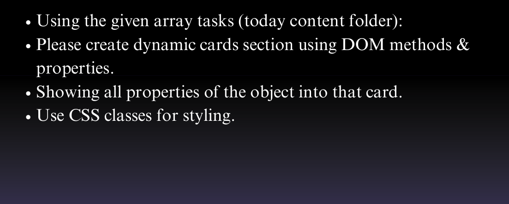 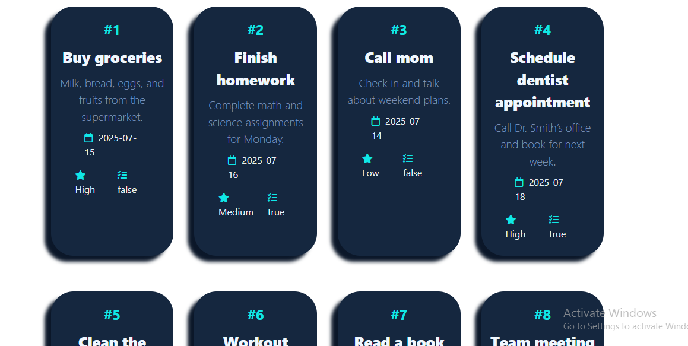HTML Code:
<!DOCTYPE html>
<html lang="en">
<head>
<meta charset="UTF-8" />
<meta name="viewport" content="width=device-width, initial-scale=1.0" />
<title>JS Day 5 - Tasks Coding</title>
<link rel="stylesheet" href="main.css" />
<link rel="stylesheet" href="all.min.css" />
<style>
* {
box-sizing: border-box;
margin: 0;
padding: 0;
}
.container {
width: 85%;
margin: auto;
display: flex;
justify-content: center;
flex-direction: row;
flex-wrap: wrap;
gap: 35px;
margin-top: 25px;
}
.card {
width: 18%;
margin-bottom: 25px;
border: 1px solid rgb(21 39 63) black;
padding: 20px 10px;
text-align: center;
background-color: rgb(21 39 63);
border-radius: 38px;
box-shadow: -11px 10px 6px 0px rgb(11 23 41);
}
.idColor {
color: rgb(16 231 230);
margin-bottom: 10px;
}
.heading {
font-size: 25px;
font-weight: 800;
color: cadetblue;
margin-bottom: 10px;
}
.paragraph {
font-size: 19px;
font-weight: 300;
color: rgb(126 148 186);
margin-bottom: 10px;
}
.iconcolor {
color: rgb(16 231 230);
margin-right: 5px;
}
.white {
color: aliceblue;
}
.mainColor {
color: rgb(232 239 243);
text-align: start;
margin-bottom: 5px;
}
.textCenter {
width: 50%;
display: block;
margin: auto;
}
.flex {
width: 67%;
display: flex;
margin: auto;
gap: 15px;
margin-top: 15px;
}
</style>
</head>
<body>
<!-- <script src="tasks.js"></script> -->
<!-- first way to connect the 2 js file and make main.js file access task array from task.js file -->
<script type="module" src="main.js"></script>
</body>
</html>
Array (tasks.js file):
// Array
export const tasks = [
{
id: 1,
title: "Buy groceries",
description: "Milk, bread, eggs, and fruits from the supermarket.",
dueDate: "2025-07-15",
priority: "High",
completed: false,
},
{
id: 2,
title: "Finish homework",
description: "Complete math and science assignments for Monday.",
dueDate: "2025-07-16",
priority: "Medium",
completed: true,
},
{
id: 3,
title: "Call mom",
description: "Check in and talk about weekend plans.",
dueDate: "2025-07-14",
priority: "Low",
completed: false,
},
{
id: 4,
title: "Schedule dentist appointment",
description: "Call Dr. Smith’s office and book for next week.",
dueDate: "2025-07-18",
priority: "High",
completed: true,
},
{
id: 5,
title: "Clean the kitchen",
description: "Wipe counters, mop floor, and take out trash.",
dueDate: "2025-07-15",
priority: "Medium",
completed: false,
},
{
id: 6,
title: "Workout session",
description: "1 hour at the gym or a run in the park.",
dueDate: "2025-07-14",
priority: "High",
completed: false,
},
{
id: 7,
title: "Read a book",
description: "Read 30 pages of 'Atomic Habits'.",
dueDate: "2025-07-17",
priority: "Low",
completed: false,
},
{
id: 8,
title: "Team meeting",
description: "Weekly sync with the project team on Zoom.",
dueDate: "2025-07-14",
priority: "High",
completed: true,
},
{
id: 9,
title: "Write blog post",
description: "Draft a new post about JavaScript performance tips.",
dueDate: "2025-07-19",
priority: "Medium",
completed: false,
},
{
id: 10,
title: "Laundry",
description: "Wash, dry, and fold clothes.",
dueDate: "2025-07-15",
priority: "Low",
completed: true,
},
{
id: 11,
title: "Backup files",
description: "Back up important documents to cloud storage.",
dueDate: "2025-07-16",
priority: "Medium",
completed: false,
},
{
id: 12,
title: "Pay utility bills",
description: "Electricity and internet bills due this week.",
dueDate: "2025-07-14",
priority: "High",
completed: true,
},
{
id: 13,
title: "Plan weekend trip",
description: "Decide on location and book accommodation.",
dueDate: "2025-07-20",
priority: "Low",
completed: false,
},
{
id: 14,
title: "Organize desk",
description: "Clear clutter and arrange items neatly.",
dueDate: "2025-07-15",
priority: "Medium",
completed: false,
},
{
id: 15,
title: "Update resume",
description: "Add recent projects and review formatting.",
dueDate: "2025-07-21",
priority: "High",
completed: false,
},
];
JavaCript Code (Main.js file):
// lab 5
import { tasks } from "./tasks.js";
// the secound Way to make main.js acess tasks array using Module System
document.addEventListener("DOMContentLoaded", function () {
console.log("Hello From Main Js File...");
var container = document.createElement("div");
// first way to create cards
// for (let i = 0; i < tasks.length; i++) {
// // console.log("tasks ==", tasks[i].title);
// var IdElement = document.createElement("h2");
// IdElement.innerText = `#${tasks[i].id}`;
// IdElement.classList.add("idColor");
// var TitleElement = document.createElement("h1");
// TitleElement.innerText = tasks[i].title;
// TitleElement.classList.add("heading", "white");
// var DescriptionElement = document.createElement("p");
// DescriptionElement.innerText = tasks[i].description;
// DescriptionElement.classList.add("paragraph");
// var DueDatenElement = document.createElement("p");
// DueDatenElement.innerHTML = ` ${tasks[i].dueDate}`;
// DueDatenElement.classList.add("mainColor");
// var priorityElement = document.createElement("p");
// priorityElement.innerHTML = ` ${tasks[i].priority}`;
// priorityElement.classList.add("mainColor");
// var CompletedElement = document.createElement("p");
// CompletedElement.innerHTML = ` ${tasks[i].completed}`;
// CompletedElement.classList.add("mainColor");
// var card = document.createElement("div");
// var text = document.createElement("div");
// var flex = document.createElement("div");
// card.append(IdElement);
// card.append(TitleElement);
// card.append(DescriptionElement);
// text.append(DueDatenElement);
// flex.append(priorityElement);
// flex.append(CompletedElement);
// text.classList.add("textCenter");
// flex.classList.add("flex");
// card.append(text);
// card.append(flex);
// card.classList.add("card");
// container.append(card);
// }
// Another Way to Create Cards
tasks.map((item) => {
var card = document.createElement("div");
card.innerHTML = `
#${item.id}
${item.title}
${item.description}
${item.dueDate}
${item.priority}
${item.completed}
`;
card.classList.add("card");
container.append(card);
});
container.classList.add("container");
document.body.append(container);
});
Note:
1️⃣ استيراد البيانات بيستورد مصفوفة tasks من ملف خارجي
tasks.js
باستخدام نظام import.
2️⃣ انتظار تحميل الصفحة بيستخدم DOMContentLoaded علشان الكود يشتغل بعد ما عناصر الصفحة تكون جاهزة.
3️⃣ إنشاء الحاوية بيعمل div جديد هيكون فيه كل الكروت الخاصة بالمهام.
4️⃣ طريقة ١ (معلّقة بالكومنت) - إنشاء عناصر HTML لكل خاصية من خواص المهمة (id, title, description, dueDate, priority, completed) باستخدام createElement.
- إضافة كلاس لكل عنصر للتنسيق.
- تجميع العناصر في كارت وإضافته للحاوية.
5️⃣ طريقة ٢ (المستخدمة فعليًا) - استخدام map على مصفوفة المهام.
- إنشاء كارت واحد لكل مهمة باستخدام innerHTML مباشرة.
- تضمين الأيقونات والتنسيق داخل الكود.
6️⃣ إضافة الحاوية للصفحة بعد تجهيز الكروت، الحاوية بتاخد كلاس
container وبتتحط جوه body.
النتيجة: الكود بيعرض قائمة مهام بتصميم كروت منظم، وبيوضح طريقتين لإنشاء عناصر HTML ديناميكيًا.
Advanced Js Tasks
Lab 1
✅ Problem 1: Secure Bank Account (Closure)
Output:
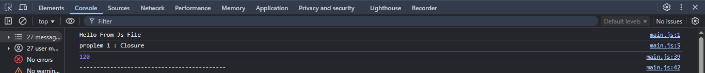HTML Code:
<!DOCTYPE html>
<html lang="en">
<head>
<meta charset="UTF-8" />
<meta name="viewport" content="width=device-width, initial-scale=1.0" />
<title>Advanced Js | Lab 1 | Problem 1</title>
</head>
<body>
<script src="main.js"></script>
</body>
</html>
// problem 1
console.log("problem 1 : Closure");
function createBankAccount(initialBalance) {
let balance = initialBalance;
return {
deposit(amount) {
if (amount > 0) {
balance += amount;
} else {
console.log("please enter Positive number");
}
},
withdraw(amount) {
if (amount > balance) {
console.log("Balance is not enough to withdraw");
} else if (amount > 0) {
balance -= amount;
} else {
console.log("please enter Positive number");
}
},
getBalance() {
return balance;
},
};
}
const account = createBankAccount(100);
account.deposit(50); // => 150
account.withdraw(30); // => 120
console.log(account.getBalance()); // => 120
Note:
المثال يوضح مفهوم Closure في JavaScript، واللي من خلاله بنقدر نحمي المتغير balance من الوصول المباشر من خارج الدالة، عن طريق دوال زي deposit و withdraw.
✅ Problem 2: create Greeter Method (Function Factory)
Output:
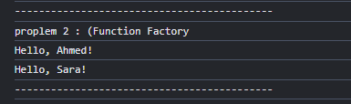Code:
// problem 2
console.log("proplem 2 : (Function Factory");
function createGreeter(name) {
return function () {
console.log(`Hello, ${name}!`);
};
}
const greetAhmed = createGreeter("Ahmed");
greetAhmed(); // => Hello, Ahmed!
const greetSara = createGreeter("Sara");
greetSara(); //=> Hello, Sara!
Note:
createGreeter
هنا هي دالة مصنع (Function Factory) لأنها بتصنع دوال جديدة حسب المدخلات اللي بتاخدها.
كل مرة بنادي
createGreeter("Ahmed")
بيرجعلي دالة جديدة بتحتفظ بالـ
name
اللي اتبعت لها (وده اسمه
Closure).
✅ Problem 3: (Currying) Task
Output:
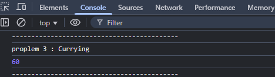Code:
// problem 3
console.log("proplem 3 : Currying");
function volume(l) {
return function (w) {
return function (h) {
return l * w * h;
};
};
}
const box = volume(5)(4)(3);
console.log(box); // => 60
Note:
الكود بيستخدم مفهوم
Currying
في
JavaScript، وده معناه تقسيم
دالة بتاخد أكتر من باراميتر لدوال متسلسلة، كل واحدة بتاخد باراميتر
واحد وترجع دالة جديدة.
هنا الدالة
volume
بتاخد
l
وترجع دالة بتاخد
w، اللي بدورها بترجع دالة
بتاخد h.
عند استدعاء
volume(5)(4)(3)
القيم بتتخزن جوا
Closure
لحد ما نحسب الحجم النهائي
l * w * h.
✅ Problem 4: Memoized Factorial Method (Memoization)
Output:
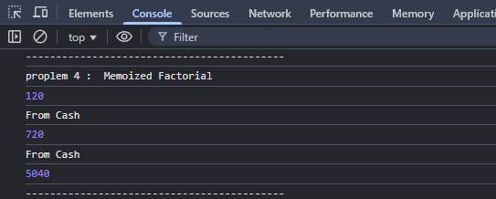Code:
// problem 4
console.log("proplem 4 : Memoized Factorial");
function memoFactorial() {
const cache = {};
function factorial(n) {
if (n === 0 || n === 1) return 1;
if (cache[n]) {
console.log("From Cash");
return cache[n];
}
cache[n] = n * factorial(n - 1);
return cache[n];
}
return factorial;
}
const factorial = memoFactorial();
console.log(factorial(5)); // => 120
console.log(factorial(6)); // => from Cash => 720
console.log(factorial(7)); // => from Cash => 5040
Note:
الكود بيطبق مفهوم
Memoization
في
JavaScript، وده أسلوب لتحسين
الأداء عن طريق تخزين نتايج الاستدعاءات السابقة لدالة، بحيث لو نفس
المدخلات اتكررت يتم إرجاع النتيجة من
cache
بدل إعادة الحساب.
الدالة
memoFactorial
بتنشئ
cache
ككائن لتخزين النتائج، وبتُرجع الدالة الداخلية
factorial
اللي بتحسب مضروب العدد باستخدام
Recursion.
عند استدعاء
factorial(5)
بتحسب النتيجة عادي، لكن عند استدعاء
factorial(6)
أو
factorial(7)
بيستخدم القيم المخزنة في
cache
عشان يرجع النتيجة أسرع.
✅ Problem 5: Memoized Fibonacci Method (Memoization)
Output:
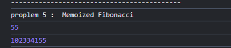Code:
// problem 5
console.log("proplem 5 : Memoized Fibon");
function memoizedFib() {
const cache = {};
function fib(n) {
if (n <= 1) return n;
if (cache[n]) {
return cache[n];
}
cache[n] = fib(n - 1) + fib(n - 2);
return cache[n];
}
return fib;
}
const fib = memoizedFib();
console.log(fib(10)); // => 55
console.log(fib(40)); // => 102334155
Note:
الكود بيطبق مفهوم
Memoization
في
JavaScript، وده بيستخدم
لتسريع العمليات الحسابية المكلفة عن طريق تخزين النتائج في
cache.
الدالة
memoizedFib
بتنشئ كائن
cache
لتخزين نتايج دالة
fib
اللي بتحسب متتالية فيبوناتشي باستخدام
Recursion.
عند استدعاء
fib(n)
لو النتيجة موجودة في
cache
بيرجعها فورًا بدل إعادة الحساب، وده بيقلل وقت التنفيذ بشكل كبير
خاصة للأرقام الكبيرة زي
fib(40).
✅ Mini App On Creat Memoize Function to Memoize another function (Memoization)
Output:
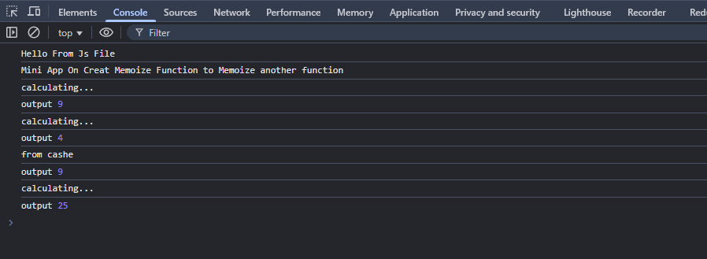Code:
console.log("Mini App On Creat Memoize Function to Memoize another function");
function slowSquare(n) {
// console.log("calculating...");
for (var i = 0; i < 4000000000; i++) {}
return n * n;
}
function memoize(fn) {
let cashe = {};
return function (...args) {
// console.log("args =", args); => print array of argument
// console.log("args =", ...args); => print argument
// The Best is using ... opr in this case
// but you can use this way in the next line
// let key = JSON.stringify(arguments); --- then use cashe[key]
if (args in cashe) {
console.log("from cashe");
return cashe[args];
}
console.log("calculating...");
cashe[args] = fn(...arguments);
return cashe[args];
};
}
let optimizedSquare = memoize(slowSquare);
console.log("output", optimizedSquare(3));
console.log("output", optimizedSquare(2, 3, 4)); // calculare square for the first value only becuase function only take one parameter
console.log("output", optimizedSquare(3));
console.log("output", optimizedSquare(5));
Note:
الكود بيطبق مفهوم
Higher-Order Functions
مع
Memoization
في
JavaScript.
الدالة
memoize
بتاخد أي دالة
fn
وترجع نسخة محسنة منها بتخزن النتائج في
cache
لتجنب إعادة الحساب.
عند استدعاء الدالة الجديدة، لو نفس القيم اتبعت قبل كده، النتيجة
بترجع من
cache
فورًا (بيطبع
"from cache")، ولو القيم جديدة
بيعمل الحساب مرة واحدة ويخزن النتيجة.
المثال هنا بيستخدم دالة
slowSquare
اللي بتحسب مربع رقم بعد عملية بطيئة (Loop كبير)، وبمجرد تغليفها بـ
memoize
بقت أسرع بكثير عند تكرار نفس المدخلات.
Lab 2
✅ Porpblem 1 - Booking System with this Context
Output:
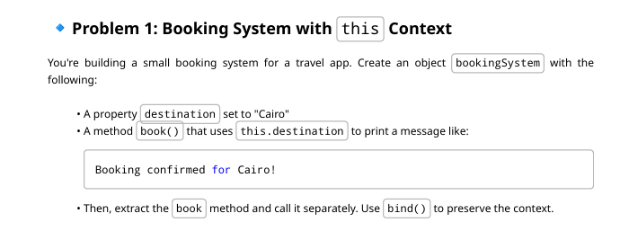 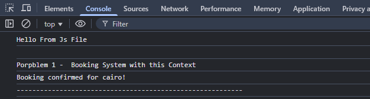Code:
// problem 1
console.log("Porpblem 1 - Booking System with this Context ");
function BookingSystem(dest) {
this.destination = dest;
this.book = function () {
console.log(`Booking confirmed for ${this.destination}!`);
};
}
var System1 = new BookingSystem("cairo");
function GetDestination(dest) {
this.destination = dest;
}
var system2 = new GetDestination("cairo");
var newBook = System1.book.bind(system2);
newBook();
Note:
الكود بيشرح استخدام مفهوم
this context
مع
bind()
في
JavaScript.
عند إنشاء كائن من
BookingSystem
بيكون عنده خاصية
destination
ودالة
book
بتستخدم
this
للوصول للوجهة.
في الحالة الطبيعية، لو استدعينا
book
خارج الكائن، قيمة
this
هتتغير ومش هتعرف تجيب الوجهة.
باستخدام
bind(system2)
قدرنا نربط
this
بالكائن الجديد
system2
بحيث الدالة
newBook
تعرض الوجهة الخاصة بيه بدل الكائن الأصلي.
✅ Porpblem 2 - Inheritance with Constructor Functions
Output:
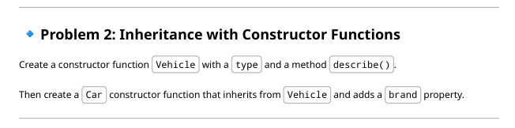 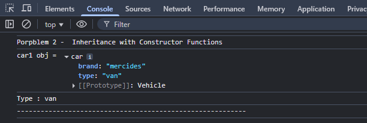Code:
// problem 2
console.log("Porpblem 2 - Inheritance with Constructor Functions ");
function Vehicle(t) {
this.type = t;
}
// Only For optimiztion
Vehicle.prototype.descripe = function () {
console.log(`Type : ${this.type}`);
};
function car(t, b) {
Vehicle.call(this, t);
this.brand = b;
}
car.prototype = Object.create(Vehicle.prototype);
car1 = new car("van", "mercides");
console.log("car1 obj =", car1);
car1.descripe();
Note:
الكود بيشرح مفهوم
Inheritance
باستخدام
Constructor Functions
في
JavaScript.
عندنا دالة إنشاء
Vehicle
اللي بتحدد خاصية
type
وبتضيف دالة
descripe
في
prototype
علشان نعيد استخدامها من غير ما تتكرر في كل كائن جديد.
بعد كده عملنا دالة إنشاء
car
اللي بترث من
Vehicle
عن طريق
Vehicle.call(this, t)
لوراثة الخصائص، وبعدين استخدمنا
Object.create
لوراثة الدوال من
Vehicle.prototype.
النتيجة إن أي كائن من
car
يقدر يستخدم دالة
descripe
الموروثة من
Vehicle.
✅ Porpblem 3 - Singleton Config Manager
Output:
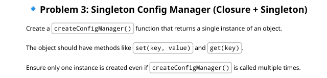 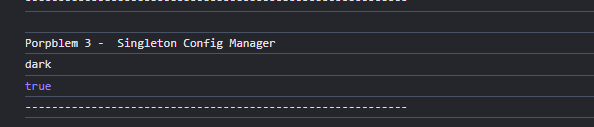Code:
// problem 3
console.log("Porpblem 3 - Singleton Config Manager ");
const createConfigManager = (function () {
let instance;
/*
Be Carfule Here instance shouid be not initalize
before this ==> if (instance){return instance;} or get an error
Can You define it on this way --> let instance = null; -- this is another correct way
*/
return function () {
if (instance) {
return instance;
}
const config = {};
instance = {
set(key, value) {
config[key] = value;
},
get(key) {
return config[key];
},
};
return instance;
};
})();
const manager1 = createConfigManager();
manager1.set("theme", "dark");
const manager2 = createConfigManager();
console.log(manager2.get("theme"));
console.log(manager1 === manager2);
Note:
الكود بيشرح مفهوم
Singleton Pattern
في
JavaScript، واللي بيضمن إن
فيه نسخة واحدة بس من الكائن اللي بيُنشأ، مهما استدعينا الدالة
المسؤولة عن إنشائه.
هنا استخدمنا
IIFE
علشان نعمل
closure
بيحتفظ بالمتغير
instance
اللي بيخزن الكائن الوحيد.
أول مرة ننادي
createConfigManager
بيتم إنشاء الكائن وإرجاعه، ولو ناديناها تاني بيرجع نفس النسخة من
غير ما ينشئ نسخة جديدة.
النتيجة إن
manager1
و
manager2
بيشيروا لنفس الكائن، وبالتالي أي تعديل على واحد فيهم بيظهر في
التاني.
✅ Porpblem 4 - Property Control
Output:
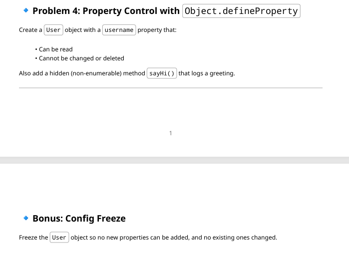 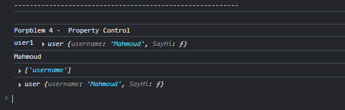Code:
// problem 4
console.log("Porpblem 4 - Property Control ");
function user(u) {
this.username = u;
this.SayHi = function () {
console.log(`Hi ${this.username}`);
};
}
user1 = new user("Mahmoud");
console.log("user1", user1);
Object.defineProperties(user1, {
username: {
value: "Mahmoud",
writable: false, // Cannot be changed
configurable: false, // Cannot be deleted
enumerable: true, //Can be read
},
});
console.log("user1", user1);
user1.username = "Ali";
delete user1.username;
console.log(user1.username);
Object.defineProperty(user1, "SayHi", {
value: function () {
console.log(`Hi ${this.username}`);
},
writable: true,
configurable: true,
enumerable: false, // this statement hidden the sayHi method
});
console.log(Object.keys(user1)); // ["username"] only because sayHi is hidden
Object.freeze(user1);
user1.password = "ddddd";
console.log(user1);
Note:
من خلالهم نقدر نحدد إعدادات خاصة لكل خاصية زي:
- writable: إذا كانت الخاصية قابلة للتغيير.
- configurable: إذا كان ممكن نحذف الخاصية أو نعيد تعريفها.
- enumerable: إذا كانت هتظهر في التكرار أو في Object.keys.
وفي الآخر استخدمنا Object.freeze لقفل الكائن بالكامل بحيث لا يمكن إضافة أو تعديل أو حذف أي خاصية.
Lab 3
✅ Problem 1: Debounced Search Box
Output:
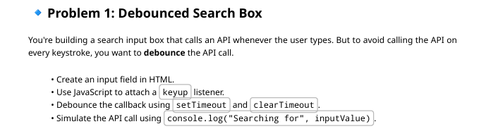 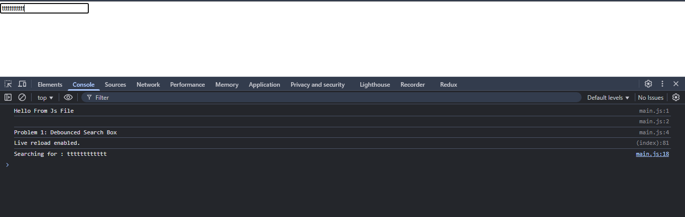Code:
<!DOCTYPE html>
<html lang="en">
<head>
<meta charset="UTF-8" />
<meta name="viewport" content="width=device-width, initial-scale=1.0" />
<title>Advanced Js - Day 3 Lab</title>
<style>
#notificationBox {
padding: 10px;
background-color: #e0ffe0;
border: 1px solid #4caf50;
margin-top: 10px;
display: none;
width: 80%;
margin: auto;
}
#errorBox {
color: red;
margin-top: 10px;
}
</style>
</head>
<body>
<!-- Using on Problem 1 -->
<input id="input" type="text" />
<script src="main.js"></script>
</body>
</html>
// problem 1
console.log("Problem 1: Debounced Search Box");
var input = document.getElementById("input");
function debounce(func, delay) {
let timeOutId;
return function (...arg) {
clearTimeout(timeOutId);
timeOutId = setTimeout(() => {
func.apply(this, arg);
}, delay);
};
}
function search(e) {
console.log(`Searching for : ${e.target.value}`);
}
debounceSearch = debounce(search, 300);
input.addEventListener("keyup", debounceSearch);
Note:
هنا الدالة debounce بتستقبل دالة تانية func وزمن التأخير delay، وبتستخدم setTimeout وclearTimeout علشان تلغي أي تنفيذ سابق وتبدأ عداد جديد.
في المثال، لما نكتب في مربع البحث input، الدالة search مش هتتنفذ غير لما نوقف الكتابة لمدة 300ms، وده بيمنع استدعاء الدالة كتير بشكل غير ضروري.
✅ Problem 2: Throttled Scroll Logger
Output:
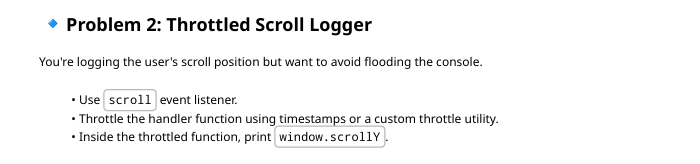 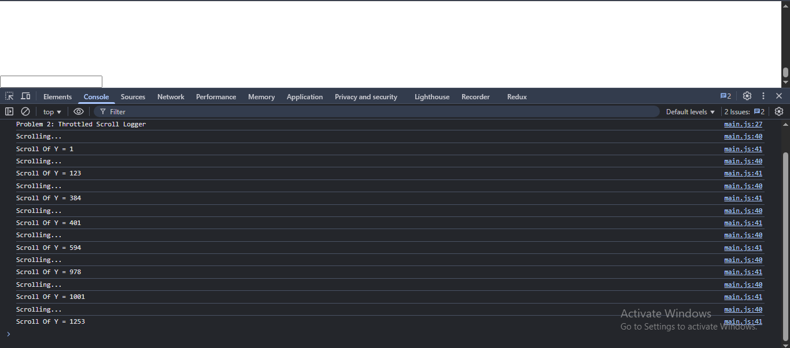Code:
<!DOCTYPE html>
<html lang="en">
<head>
<meta charset="UTF-8" />
<meta name="viewport" content="width=device-width, initial-scale=1.0" />
<title>Advanced Js - Day 3 Lab</title>
</head>
<body>
<!-- Using on Problem 1 -->
<br /><br /><br /><br /><br /><br /><br /><br /><br /><br /><br /><br /><br />
<br /><br /><br /><br /><br /><br /><br /><br /><br /><br /><br /><br /><br />
<br /><br /><br /><br /><br /><br /><br /><br /><br /><br /><br /><br /><br />
<br /><br /><br /><br /><br /><br /><br /><br /><br /><br /><br /><br /><br />
<br /><br /><br /><br /><br /><br /><br /><br /><br /><br /><br /><br /><br />
<input id="input" type="text" />
<script src="main.js"></script>
</body>
</html>
// problem 2
console.log("Problem 2: Throttled Scroll Logger");
function throttel(func, interval) {
let lastCall = 0;
return function (...args) {
const now = Date.now();
if (now - lastCall >= interval) {
lastCall = now;
func.apply(this, args);
}
};
}
function Scroll() {
console.log(`Scrolling...`);
console.log(`Scroll Of Y = ${window.scrollY}`);
}
throtteledScroll = throttel(Scroll, 100);
window.addEventListener("scroll", throtteledScroll);
Note:
هنا الدالة throttel بتستقبل دالة func وفاصل زمني interval بالمللي ثانية.
بتحتفظ بآخر وقت تم فيه استدعاء الدالة lastCall، وبتسمح بتنفيذها بس لو الفرق بين الوقت الحالي now وآخر استدعاء أكبر أو يساوي interval.
في المثال، كل ما يحصل scroll على الصفحة، دالة Scroll هتتنفذ كل 100ms فقط مهما كانت سرعة التمرير، وده بيقلل الضغط على الأداء.
✅ Problem 3: Custom Notification Event
Output:
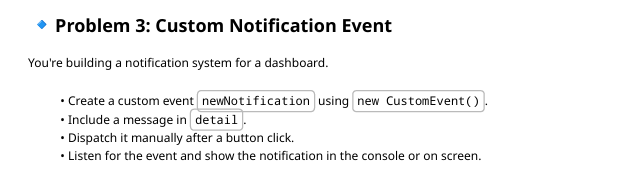 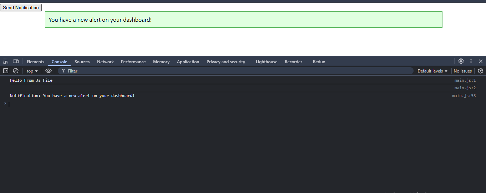Code:
<!DOCTYPE html>
<html lang="en">
<head>
<meta charset="UTF-8" />
<meta name="viewport" content="width=device-width, initial-scale=1.0" />
<title>Advanced Js - Day 3 Lab</title>
</head>
<body>
<!-- Problem 3 -->
<button id="notifyBtn">Send Notification</button>
<div id="notificationBox"></div>
<script src="main.js"></script>
</body>
</html>
// problem 3
console.log(" Problem 3: Custom Notification Event");
const notifyBtn = document.getElementById("notifyBtn");
const notificationBox = document.getElementById("notificationBox");
// Listen for custom event
document.addEventListener("newNotification", function (e) {
const message = e.detail.message;
console.log("Notification:", message);
notificationBox.textContent = message;
notificationBox.style.display = "block";
});
// Dispatch the event on button click
notifyBtn.addEventListener("click", function () {
const customEvent = new CustomEvent("newNotification", {
detail: {
message: "You have a new alert on your dashboard!",
},
});
document.dispatchEvent(customEvent);
});
Note:
هنا إحنا بنسمع للحدث newNotification عن طريق addEventListener على document.
عند استقبال الحدث، بنقرأ الرسالة من e.detail.message وبنعرضها جوه notificationBox.
لما المستخدم يضغط على الزر notifyBtn، بننشئ حدث جديد باستخدام CustomEvent ونبعت الرسالة كـ detail وبعدين بنستخدم dispatchEvent علشان نطلق الحدث على مستوى document.
النتيجة: عند الضغط على الزر، بيتبعت الحدث، ويتنفذ الكود اللي بيسمع له ويعرض الإشعار.
📂 Advanced JS Project
Output:
Code:
<!DOCTYPE html>
<html lang="en">
<head>
<meta charset="UTF-8" />
<meta name="viewport" content="width=device-width, initial-scale=1.0" />
<title>Advanced JavaCript Project</title>
<link rel="StyleSheet" href="main.css" />
<style>
:root {
--bg: #f9f9f9;
--text: #111;
--card: #fff;
}
body.dark {
--bg: #111;
--text: #f9f9f9;
--card: #1e1e1e;
}
body {
margin: 0;
font-family: sans-serif;
background: var(--bg);
color: var(--text);
}
.dashboard {
max-width: 800px;
margin: auto;
padding: 1rem;
}
header {
display: flex;
justify-content: space-between;
align-items: center;
}
section {
background: var(--card);
padding: 1rem;
margin: 1rem 0;
border-radius: 8px;
}
button {
padding: 0.5rem 1rem;
cursor: pointer;
}
input {
padding: 0.5rem;
width: 100%;
margin-top: 0.5rem;
}
</style>
</head>
<body>
<div class="dashboard">
<header>
<h1>📊 Dashboard</h1>
<button id="themeToggle">🌗 Toggle Theme</button>
</header>
<section class="notifications">
<h2>🔔 Notifications (<span id="notifCount">0</span>)</h2>
<button id="notifyBtn">➕ Trigger Notification</button>
<ul id="notifList"></ul>
</section>
<section class="search">
<h2>🔍 Debounced Search</h2>
<input type="text" id="searchInput" placeholder="Type to search..." />
<div id="searchStatus"></div>
</section>
<section class="logs">
<h2>📜 Scroll Logger (Throttled)</h2>
<p>Scroll to see log in the console every 1s.</p>
</section>
<section class="errors">
<h2>❌ Async Error Handling</h2>
<button id="fetchDataBtn">Simulate Fetch Error</button>
<div id="errorDisplay"></div>
</section>
</div>
<script src="main.js"></script>
</body>
</html>
// Advance Js Project
console.log("Hello From Js File");
console.log("Advance Js Project");
console.log("\n");
// ---------- Notifications ----------
const notifyBtn = document.getElementById("notifyBtn");
const notifList = document.getElementById("notifList");
const notifCount = document.getElementById("notifCount");
let count = 0;
// Load from localStorage
const saved = JSON.parse(localStorage.getItem("notifications")) || [];
saved.forEach(({ message, time }) => renderNotification(message, time));
notifCount.textContent = saved.length;
count = saved.length;
notifyBtn.addEventListener("click", () => {
const message = `New update received at ${new Date().toLocaleTimeString()}`;
const event = new CustomEvent("newNotification", {
detail: { message, time: Date.now() },
});
window.dispatchEvent(event);
});
window.addEventListener("newNotification", (e) => {
const { message, time } = e.detail;
renderNotification(message, time);
count++;
notifCount.textContent = count;
// Store in localStorage
saved.push({ message, time });
localStorage.setItem("notifications", JSON.stringify(saved));
});
function renderNotification(message, time) {
const li = document.createElement("li");
li.textContent = `${message}`;
notifList.prepend(li);
}
// ---------- Debounce Search ----------
const searchInput = document.getElementById("searchInput");
const searchStatus = document.getElementById("searchStatus");
function debounce(fn, delay) {
let timeout;
return function (...args) {
clearTimeout(timeout);
timeout = setTimeout(() => fn.apply(this, args), delay);
};
}
const fakeAPISearch = debounce((query) => {
searchStatus.textContent = `Searching for "${query}"...`;
}, 500);
searchInput.addEventListener("input", (e) => {
fakeAPISearch(e.target.value);
});
// ---------- Scroll Logger (Throttle) ----------
function throttle(fn, limit) {
let lastCall = 0;
return function (...args) {
const now = Date.now();
if (now - lastCall >= limit) {
lastCall = now;
return fn.apply(this, args);
}
};
}
window.addEventListener(
"scroll",
throttle(() => {
// console.log("Scroll...");
console.log("Scroll Y:", window.scrollY);
}, 100)
);
// ---------- Async Error Simulation ----------
const fetchDataBtn = document.getElementById("fetchDataBtn");
const errorDisplay = document.getElementById("errorDisplay");
async function fetchData() {
try {
// Simulate error
throw new Error("Failed to fetch data from server.");
} catch (err) {
errorDisplay.textContent = err.message;
console.error("Caught Error:", err);
throw err; // Pass to global handler
}
}
fetchDataBtn.addEventListener("click", () => {
fetchData();
});
// ---------- Global Error Handler ----------
window.onerror = function (msg, url, line, col, error) {
console.log("Global Error Caught:", msg);
console.log(" File:", url);
console.log(" Line:", line, "Col:", col);
console.log(" Error Object:", error);
};
// Please UnHash the next block of code to show log for Global Error Handler
// function causeError() {
// undefinedFunction();
// // Uncaught ReferenceError: undefinedFunction is not defined from Global Error Handler
// }
// causeError();
// ---------- Dark/Light Theme ----------
const themeToggle = document.getElementById("themeToggle");
themeToggle.addEventListener("click", () => {
document.body.classList.toggle("dark");
});
Note:
1️⃣ النوتيفيكيشن (Notifications): بيسمح بإرسال إشعارات مخصصة باستخدام CustomEvent، عرضها في قائمة، وحفظها في localStorage بحيث تفضل موجودة بعد إعادة تحميل الصفحة.
2️⃣ Debounced Search: تنفيذ البحث بعد فترة تأخير (500ms) من توقف الكتابة لتقليل عدد الاستدعاءات (Optimization).
3️⃣ Throttled Scroll Logger: تسجيل موضع التمرير scrollY كل 100ms فقط لتحسين الأداء.
4️⃣ Async Error Simulation + Global Error Handling: محاكاة حدوث خطأ أثناء جلب البيانات والتعامل معه، مع معالج أخطاء عام على مستوى النافذة window.onerror.
5️⃣ Dark/Light Theme: التبديل بين الوضع الليلي والفاتح باستخدام classList.toggle على body.
النتيجة: مشروع شامل بيجمع تقنيات متقدمة في الـ DOM، الأحداث، التخزين المحلي، تحسين الأداء، وإدارة الأخطاء.
JQuery Tasks
Lab 1
✅ Task1
Output:
HTML Code:index
<!DOCTYPE html>
<html lang="en">
<head>
<meta charset="UTF-8" />
<meta name="viewport" content="width=device-width, initial-scale=1.0" />
<title>Jquery - Day 1 Lab</title>
<link rel="StyleSheet" href="main.css" />
<script src="https://code.jquery.com/jquery-3.7.1.min.js"></script>
<style>
header {
display: flex;
justify-content: start;
flex-direction: row;
gap: 30px;
margin-left: 40px;
margin-top: 20px;
}
header a {
font-size: 25px;
}
.button {
background-color: whitesmoke;
color: black;
border: 1px solid gray;
text-decoration: none;
border-radius: 6px;
padding: 5px;
cursor: pointer;
}
.link {
background-color: blue;
color: whitesmoke;
border: 2px solid whitesmoke;
text-decoration: none;
border-radius: 6px;
padding: 5px;
}
</style>
</head>
<body>
<!-- Task 1 -->
<header>
<a href="index.html">Home Page</a>
<a id="Link" href="https://www.google.com/">Google</a>
<a href="https://iti.gov.eg/">ITI</a>
<a class="button">Add Target</a>
</header>
<script src="main.js"></script>
</body>
</html>
JavaSCript Code: (main.js file)
// Task 1
$("#Link").on("mouseenter", () => {
$("#Link").attr("class", "link");
});
$("#Link").on("mouseleave", () => {
$("#Link").removeAttr("class");
});
$(".button").on("click", () => {
$('a[href^="https"]').attr("target", "_blank");
});
Note:
1️⃣ تغيير مظهر اللينك عند المرور بالماوس عند المرور على الرابط اللي الـ
id بتاعه
Link
بيضيفله كلاس link باستخدام حدث
mouseenter.
2️⃣ إرجاع مظهر اللينك لحالته الأصلية عند خروج الماوس من نفس الرابط، الكود بيشيل الكلاس باستخدام mouseleave.
3️⃣ فتح الروابط في تبويب جديد عند الضغط على الزر اللي كلاسه button، الكود بيحدد كل الروابط اللي عنوانها يبدأ بـ
https
ويضيف لها الخاصية target="_blank"
علشان تفتح في تبويب جديد.
النتيجة: الكود بيضيف تفاعل بصري للروابط ويتحكم في طريقة فتحها باستخدام أحداث jQuery.
✅ Task2
Output:
HTML Code:index
<!DOCTYPE html>
<html lang="en">
<head>
<meta charset="UTF-8" />
<meta name="viewport" content="width=device-width, initial-scale=1.0" />
<title>Jquery - Day 1 Lab</title>
<link rel="StyleSheet" href="main.css" />
<script src="https://code.jquery.com/jquery-3.7.1.min.js"></script>
<style>
table {
border-collapse: collapse;
margin-top: 30px;
}
table,
th,
td {
border: 2px solid blue;
padding: 5px 10px;
text-align: center;
}
.remove-btn {
color: red;
cursor: pointer;
font-weight: bold;
}
.container {
width: 90%;
margin: auto;
font-size: 25px;
}
</style>
</head>
<body>
<!-- Task 2 -->
<div class="container">
<label>Name : </label>
<input type="text" id="name" />
<br />
<label>Age : </label>
<input type="text" id="age" />
<br />
<button id="addBtn">Add Student</button>
<table id="studentTable">
<thead>
<tr>
<th>Name</th>
<th>Age</th>
<th></th>
</tr>
</thead>
<tbody></tbody>
</table>
</div>
<script src="main.js"></script>
</body>
</html>
JavaSCript Code: (main.js file)
// Task 2
$(document).ready(function () {
$("#addBtn").click(function () {
const name = $("#name").val().trim();
const age = $("#age").val().trim();
if (name && age) {
const row = `
${name}
${age}
X
`;
$("#studentTable tbody").append(row);
$("#name").val("");
$("#age").val("");
} else {
alert("Please enter both name and age.");
}
});
$("#studentTable").on("click", ".remove-btn", function () {
$(this).closest("tr").remove();
});
});
Note:
1️⃣ انتظار تحميل الصفحة بيستخدم $(document).ready() علشان يضمن إن عناصر الصفحة جاهزة قبل تشغيل الأحداث.
2️⃣ إضافة طالب جديد عند الضغط على الزر
addBtn،
الكود بياخد القيم من حقول name و age،
ويتأكد إنهم مش فاضيين.
لو البيانات صحيحة، بيعمل صف جديد <tr>
وبيضيفه في tbody الجدول.
3️⃣ تفريغ الحقول بعد الإضافة، بيرجع قيم الإدخال لفارغ باستخدام
val("").
4️⃣ تنبيه في حالة نقص البيانات لو أي حقل فاضي، بيظهر alert يطلب إدخال القيم المطلوبة.
5️⃣ حذف صف من الجدول الكود بيراقب النقر على العنصر
.remove-btn
وبيحذف الصف الأقرب باستخدام closest("tr").remove().
النتيجة: الكود بيتيح إضافة وحذف الطلاب ديناميكيًا مع التحقق من صحة المدخلات.
✅ Task3
Output:
HTML Code:index
<!DOCTYPE html>
<html lang="en">
<head>
<meta charset="UTF-8" />
<meta name="viewport" content="width=device-width, initial-scale=1.0" />
<title>Jquery - Day 1 Lab</title>
<link rel="StyleSheet" href="main.css" />
<script src="https://code.jquery.com/jquery-3.7.1.min.js"></script>
<style>
body {
margin: 0;
padding: 0;
}
.tabs {
display: flex;
background-color: #222;
padding: 10px;
}
.tabs div {
color: white;
padding: 10px 20px;
cursor: pointer;
margin-right: 10px;
background-color: #333;
}
.tabs .active {
background-color: dodgerblue;
}
.content {
padding: 20px;
display: none;
background-color: #f0f8ff;
}
.content.active {
display: block;
}
</style>
</head>
<body>
<!-- Task 3 -->
<div class="tabs">
<div class="tab active" data-target="#div1">Task 1</div>
<div class="tab" data-target="#div2">Task 2</div>
<div class="tab" data-target="#div3">Task 3</div>
</div>
<div id="div1" class="content active">This is Task 1 content.</div>
<div id="div2" class="content">This is Task 2 content.</div>
<div id="div3" class="content">This is Task 3 content.</div>
<script src="main.js"></script>
</body>
</html>
JavaSCript Code: (main.js file)
// Task 3
$(document).ready(function () {
$(".tab").click(function () {
$(".tab").removeClass("active");
$(this).addClass("active");
$(".content").removeClass("active");
const target = $(this).data("target");
$(target).addClass("active");
});
});
Note:
1️⃣ انتظار تحميل الصفحة بيستخدم $(document).ready() علشان يضمن تشغيل الكود بعد تحميل عناصر الصفحة بالكامل.
2️⃣ تغيير حالة التبويب النشط عند الضغط على أي عنصر
.tab،
الكود بيشيل الكلاس active من كل التبويبات،
ويضيفه للتبويب اللي تم الضغط عليه.
3️⃣ عرض المحتوى المرتبط بيشيل الكلاس
active من كل عناصر .content،
وبعدين يجيب قيمة data-target للتبويب اللي تم الضغط عليه
ويضيف الكلاس active للمحتوى المطابق.
النتيجة: المستخدم يقدر يتنقل بين أجزاء المحتوى بسهولة عن طريق الضغط على التبويبات، مع إظهار جزء واحد في كل مرة.
Lab 2
✅ Task1
Desired Output:
Output on my web page:
HTML Code:index
<!DOCTYPE html>
<html lang="en">
<head>
<meta charset="UTF-8" />
<meta name="viewport" content="width=device-width, initial-scale=1.0" />
<title>JQuery - Day2 Lab</title>
<link rel="StyleSheet" href="main.css" />
<link
rel="stylesheet"
href="https://cdnjs.cloudflare.com/ajax/libs/font-awesome/6.4.0/css/all.min.css"
/>
<script src="https://ajax.googleapis.com/ajax/libs/jquery/3.7.1/jquery.min.js"></script>
</head>
<body>
<!-- Task1 -->
<div class="sidebar">
<div class="menu-toggle">📂</div>
<div class="menu-items">
<div class="menu" data-target="#submenu1">Menu 1</div>
<div class="submenu" id="submenu1">
<div>Item 1</div>
<div>Item 2</div>
<div>Item 3</div>
</div>
<div class="menu" data-target="#submenu2">Menu 2</div>
<div class="submenu" id="submenu2">
<div>Item 1</div>
<div>Item 2</div>
<div>Item 3</div>
</div>
</div>
</div>
<script src="main.js"></script>
</body>
</html>
JavaSCript Code: (main.js file)
// Task 1
$(document).ready(function () {
let isOpen = false;
$(".menu-toggle").click(function () {
$(".sidebar").toggleClass("expanded");
if (!isOpen) {
$(".menu-items").fadeIn(300);
} else {
$(".menu-items").fadeOut(200);
$(".submenu").slideUp();
$(".menu").removeClass("active-menu");
}
isOpen = !isOpen;
});
$(".menu").click(function () {
let target = $(this).data("target"); // قراءة الـ data-target
// إغلاق باقي القوائم
$(".submenu").not(target).slideUp();
$(".menu").not(this).removeClass("active-menu");
// فتح أو غلق القائمة المطلوبة
$(target).slideToggle();
$(this).toggleClass("active-menu");
});
Note:
1️⃣ فتح وإغلاق القائمة الجانبية — عند الضغط على
.menu-toggle يتم إضافة أو إزالة
كلاس expanded من .sidebar
مع إظهار أو إخفاء .menu-items باستخدام
fadeIn() و fadeOut().
2️⃣ إدارة القوائم الفرعية — عند الضغط على عنصر
.menu يتم قراءة الخاصية
data-target لتحديد القائمة الفرعية المطلوبة،
ثم إغلاق باقي القوائم باستخدام slideUp()
وفتح أو إغلاق القائمة المستهدفة بـ slideToggle().
3️⃣ التنسيق النشط — يتم إضافة أو إزالة كلاس active-menu لتمييز القائمة المفتوحة حاليًا.
النتيجة: واجهة تفاعلية منظمة تسهّل عرض القوائم والعناصر باستخدام jQuery وحركات سلسة.
✅ Task2
Desired Output:
Output on my web page:
HTML Code:index
<!DOCTYPE html>
<html lang="en">
<head>
<meta charset="UTF-8" />
<meta name="viewport" content="width=device-width, initial-scale=1.0" />
<title>JQuery - Day2 Lab</title>
<link rel="StyleSheet" href="main.css" />
<link
rel="stylesheet"
href="https://cdnjs.cloudflare.com/ajax/libs/font-awesome/6.4.0/css/all.min.css"
/>
<script src="https://ajax.googleapis.com/ajax/libs/jquery/3.7.1/jquery.min.js"></script>
<style>
* {
box-sizing: border-box;
margin: 0;
padding: 0;
}
.container {
width: 85%;
margin: auto;
display: flex;
justify-content: center;
flex-direction: row;
flex-wrap: wrap;
gap: 35px;
margin-top: 25px;
}
.card {
width: 18%;
margin-bottom: 25px;
border: 1px solid rgb(21 39 63);
padding: 20px 10px;
text-align: center;
background-color: rgb(21 39 63);
border-radius: 38px;
box-shadow: -11px 10px 6px 0px rgb(11 23 41);
}
.idColor {
color: rgb(16 231 230);
margin-bottom: 10px;
font-size: 14px;
}
.heading {
font-size: 20px;
font-weight: 800;
color: cadetblue;
margin-bottom: 16px;
}
.paragraph {
font-size: 15px;
font-weight: 300;
color: rgb(126 148 186);
margin-bottom: 10px;
text-align: start;
}
.iconcolor {
color: rgb(16 231 230);
margin-right: 5px;
}
.white {
color: aliceblue;
}
.mainColor {
color: rgb(232 239 243);
text-align: start;
margin-bottom: 5px;
}
.textCenter {
width: 50%;
display: block;
margin: auto;
}
.flex {
width: 67%;
display: flex;
margin: auto;
gap: 15px;
margin-top: 15px;
}
#fromspan {
margin: 0 5px;
}
</style>
</head>
<body>
<!-- Task2 -->
<div class="container" id="postsContainer"></div>
<script src="main.js"></script>
</body>
</html>
JavaSCript Code: (main.js file)
// Task2
$.ajax({
url: "https://jsonplaceholder.typicode.com/posts",
method: "GET",
success: function (data) {
let posts = data.slice(0, 12);
$.each(posts, function (index, post) {
$("#postsContainer").append(`
Post: ${post.id} From User: ${post.userId}
${post.title}
${post.body}
`);
});
},
error: function () {
$("#postsContainer").html("فشل تحميل البيانات
");
},
});
});
Note:
1️⃣ جلب البيانات — باستخدام
$.ajax()
مع تحديد url الخاص بـ
https://jsonplaceholder.typicode.com/posts
والطريقة GET للحصول على المنشورات.
2️⃣ معالجة البيانات — عند نجاح الطلب
success
يتم أخذ أول 12 منشور فقط
عبر slice(0, 12)، ثم استخدام $.each()
لإنشاء عناصر HTML تحتوي على:
• رقم المنشور (
post.id)
• رقم المستخدم (post.userId)
• العنوان (post.title)
• النص (post.body)
3️⃣ التعامل مع الأخطاء — في حالة فشل الطلب يتم عرض رسالة "فشل تحميل البيانات" داخل
#postsContainer.
النتيجة: واجهة تعرض مجموعة من المنشورات بشكل منسق مع أيقونات Font Awesome واستجابة فورية عند وجود خطأ.
ES6 Tasks
Lab 1
Desired Output:
Output on my web page console:
JavaSCript Code: (main.js file)
// lab1
console.log("Hello From Js File");
console.log("\n");
// Task 1
console.log("Task 1");
var x = 10;
var y = 20;
var arr = [x, y];
var [y, x] = arr;
console.log("x =", x);
console.log("y =", y);
console.log("----------------------------------------------------------");
console.log("\n");
//////////////////////////////////////////////////////
// Task 2
console.log("Task 2");
function MaxandMin(...argu) {
var max = Math.max(...argu);
var min = Math.min(...argu);
var arr = [`Max = ${max}`, `Min = ${min}`];
return arr;
}
console.log(MaxandMin(1, 2, 3, 4, 5, 6));
console.log("----------------------------------------------------------");
console.log("\n");
//////////////////////////////////////////////////////
// Task 3
console.log("Task 3");
console.log("a.");
// a.
var fruits = ["apple", "strawberry", "banana", "orange", "mango"];
var Check = fruits.every((el) => {
if (typeof el === "string") return el;
});
console.log(Check);
console.log("....................");
console.log("\n");
console.log("b.");
// b.
var SomeCheck = fruits.some((el) => {
if (el.startsWith("a")) return el;
});
console.log(SomeCheck);
console.log("....................");
console.log("\n");
console.log("c.");
// c.
var FilteredArr = fruits.filter((el) => {
if (el.startsWith("b") || el.startsWith("s")) return el;
});
console.log(FilteredArr);
console.log("....................");
console.log("\n");
console.log("d.");
// d.
var MapedArr = fruits.map((el) => `I Like ${el}`);
console.log("e.");
// e.
MapedArr.forEach((el) => console.log(el));
console.log("....................");
console.log("\n");
Note:
1️⃣ Task 1 — تبادل القيم باستخدام Destructuring تعريف متغيرين
x و y ثم وضعهما داخل مصفوفة،
وبعدها يتم التبديل بينهما باستخدام [y, x] = arr
بحيث تتغير القيم بدون متغير وسيط.
2️⃣ Task 2 — إيجاد القيم القصوى والدنيا إنشاء دالة
MaxandMin(...argu) تستقبل عدد غير محدد من القيم،
وتستخدم Math.max() و Math.min()
لاستخراج أكبر وأصغر قيمة، ثم تعيدهم كمصفوفة نصوص.
3️⃣ Task 3 — العمل على المصفوفات باستخدام دوال Array Methods:
•
every() — التأكد أن جميع العناصر نصوص.
• some() — التحقق إذا كان هناك عنصر يبدأ بحرف "a".
• filter() — إنشاء مصفوفة جديدة تحتوي العناصر التي تبدأ بـ "b" أو "s".
• map() — تكوين نص جديد لكل عنصر بصيغة "I Like ...".
• forEach() — عرض النصوص الجديدة في Console.
النتيجة: الكود يوضح مبادئ Destructuring، ودوال Math، وأساليب التعامل مع المصفوفات بطريقة عملية ومنظمة.
Lab 2
Desired Output:
Output on my web page:
HTML Code:index
<!DOCTYPE html>
<html lang="en">
<head>
<meta charset="UTF-8" />
<meta name="viewport" content="width=device-width, initial-scale=1.0" />
<title>Es6 - Lab2</title>
<link rel="StyleSheet" href="main.css" />
<style>
#list {
list-style: none;
padding: 0;
margin: 20px auto;
width: fit-content;
max-width: 90%;
background-color: #afadad;
border-radius: 10px;
box-shadow: 0 4px 12px rgba(0, 0, 0, 0.1);
display: flex;
justify-content: center;
flex-direction: row;
gap: 5px;
flex-wrap: wrap;
}
#postsList {
margin: 20px auto;
max-width: 85%;
}
.userel {
padding: 10px 10px;
margin: 8px;
background: #ffffff;
border-left: 5px solid #4caf50;
border-radius: 6px;
font-family: "Segoe UI", sans-serif;
font-size: 16px;
color: #333;
transition: all 0.3s ease;
cursor: pointer;
}
.userel:hover {
background: #e8f5e9;
transform: scale(1.02);
cursor: pointer;
}
.active {
background-color: #e8f5e9;
transform: scale(1.02);
cursor: pointer;
}
</style>
</head>
<body>
<header>
<ul id="list"></ul>
</header>
<div id="postsList"></div>
<script src="main.js"></script>
</body>
</html>
JavaSCript Code: (main.js file)
// Lab 2
console.log("Hello From Main Js File");
fetch("https://jsonplaceholder.typicode.com/users")
.then((res) => {
if (!res.ok) {
throw "Load Data Is Failed";
}
return res.json();
})
.then((data) => {
disblayUsers(data);
})
.catch((e) => console.error("Error :", e));
var UsersList = document.getElementById("list");
function disblayUsers(users) {
users.map((user, index) => {
const li = document.createElement("li");
li.classList.add("userel");
li.textContent = user.name;
if (index === 0) {
li.classList.add("active");
GetPosts(user.id);
}
li.addEventListener("click", () => {
document.querySelectorAll(".userel").forEach((el) => {
el.classList.remove("active");
});
li.classList.add("active");
GetPosts(user.id);
});
UsersList.appendChild(li);
});
}
async function GetPosts(userid) {
try {
var res = await fetch(
`https://jsonplaceholder.typicode.com/posts?userId=${userid}`
);
const data = await res.json();
await disblayPosts(data);
} catch (e) {
console.error("Error :", e);
}
}
var postList = document.getElementById("postsList");
async function disblayPosts(posts) {
postList.innerHTML = "";
if (posts && posts.length > 0) {
if (posts) {
posts.slice(5).map((post) => {
postList.innerHTML += `${post.title} `;
});
}
}
}
disblayPosts();
Note:
1️⃣ جلب قائمة المستخدمين — استخدام
fetch("https://jsonplaceholder.typicode.com/users")
لجلب البيانات، والتحقق من نجاح الاستجابة باستخدام
if (!res.ok)،
ثم تحويلها إلى JSON وإرسالها للدالة disblayUsers().
2️⃣ عرض المستخدمين في القائمة — إنشاء عناصر
<li> ديناميكيًا باستخدام document.createElement()،
إضافة الكلاس "active" لأول مستخدم،
وعرض منشوراته مباشرة عند التحميل الأول.
3️⃣ التفاعل مع القائمة — عند النقر على أي مستخدم، يتم إزالة "active" من الجميع، وتعيينها للمستخدم الحالي، مع استدعاء
GetPosts(user.id) لجلب المنشورات.
4️⃣ جلب المنشورات — دالة
GetPosts() تستخدم async/await
لجلب بيانات من رابط API يعتمد على userId،
ثم تمرير النتيجة لـ disblayPosts().
5️⃣ عرض المنشورات — يتم إفراغ المحتوى السابق باستخدام
postList.innerHTML = ""،
ثم عرض المنشورات بدءًا من الفهرس السادس باستخدام slice(5)،
وإضافتها إلى الصفحة كـ <li>.
النتيجة: تطبيق يربط بين قائمة المستخدمين ومنشوراتهم بشكل تفاعلي وسلس.
Lab 3
Desired Output:
Output on my web page:
HTML Code:index
<!DOCTYPE html>
<html lang="en">
<head>
<meta charset="UTF-8" />
<meta name="viewport" content="width=device-width, initial-scale=1.0" />
<title>ES6 - Lab3</title>
</head>
<body>
<script type="module" src="main.js"></script>
</body>
</html>
JavaScript Code: (main.js file)
console.log("Hello From Main Js File");
import { Rectangle } from "./Rectangle.js";
import { Square } from "./Square.js";
import { Circle } from "./Circle.js";
const r = new Rectangle(10, 5);
const s = new Square(6);
const c = new Circle(3);
console.log(r.toString());
console.log(s.toString());
console.log(c.toString());
JavaScript Class: (Shape.js file)
// Shape.js
export default class Shape {
constructor(name) {
this.name = name;
}
getArea() {
throw new Error("getArea() must be implemented");
}
getPerimeter() {
throw new Error("getPerimeter() must be implemented");
}
toString() {
return `${
this.name
} - Area: ${this.getArea()}, Perimeter: ${this.getPerimeter()}`;
}
}
JavaScript Class: (Square.js file)
// Square.js
import Shape from "./Shape.js";
export class Square extends Shape {
constructor(side) {
super("Square");
this.side = side;
}
getArea() {
return this.side * this.side;
}
getPerimeter() {
return 4 * this.side;
}
}
JavaScript Class: (Rectangle.js file)
// Rectangle.js
import Shape from "./Shape.js";
export class Rectangle extends Shape {
constructor(width, height) {
super("Rectangle");
this.width = width;
this.height = height;
}
getArea() {
return this.width * this.height;
}
getPerimeter() {
return 2 * (this.width + this.height);
}
}
JavaScript Class: (Circle.js file)
//Circle.js
import Shape from "./Shape.js";
export class Circle extends Shape {
constructor(radius) {
super("Circle");
this.radius = radius;
}
getArea() {
return Math.PI * this.radius ** 2;
}
getPerimeter() {
return 2 * Math.PI * this.radius;
}
}
Note:
1️⃣ إنشاء الكلاس الأب — كلاس
Shape يحتوي على خصائص مشتركة مثل name
ودوال عامة getArea() و getPerimeter()
يتم تعريفها برمي خطأ لإجبار الكلاسات الأبناء على إعادة كتابتها.
2️⃣ إنشاء الكلاسات الأبناء —
Rectangle، Square، Circle
ترث من Shape وتعيد تعريف دوال المساحة والمحيط
باستخدام المعادلات الرياضية المناسبة لكل شكل.
3️⃣ إعادة تعريف toString() — الدالة في
Shape تعرض صيغة نصية تحتوي
على اسم الشكل، مساحته، ومحيطه،
ويتم استخدامها عند طباعة الكائن في console.
4️⃣ استخدام الـ Modules — تقسيم الكلاسات في ملفات خارجية .js واستدعاؤها في
main.js باستخدام
import / export.
5️⃣ إنشاء الكائنات — إنشاء كائن من كل شكل وتمرير الأبعاد اللازمة، ثم طباعة بياناته في console باستخدام
console.log().
النتيجة: تطبيق منظم يطبق الوراثة والتعدد الشكلي (Polymorphism) باستخدام JavaScript ES6.